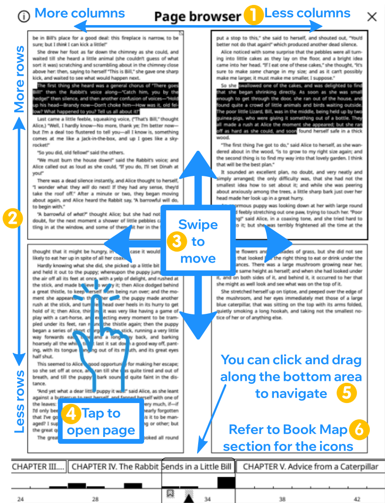

Estás leyendo la versión en Español de la Guía de Usuario de KOReader. También hay voluntarios traduciendo esta guía a otras lenguas. Como puedes ver en el estado general de traducción más abajo, hay muchas traducciones en proceso. Solo enlazamos a las lenguas con más de un 50 % traducido por motivos de usabilidad.
Más del 80% traducido
Para ver todos las lenguas a las que está siendo traducida actualmente y contribuir en el esfuerzo de traducir la guía de usuario, por favor visita la página de traducción de Weblate de nuestro proyecto.
Estado general de la traducción de la guía de usuario

Esta guía está diseñada principalmente para pantallas en color. Si la estás leyendo por primera vez, recomendamos que lo hagas desde un ordenador, tablet o móvil. Ver los elementos de la interfaz de usuario destacados en color te resultará más fácil mientras aprendes a usar KOReader. Naturalmente puedes leerla en tu dispositivo de tinta electrónica, pero la experiencia no será la óptima.
Puedes usar la función de búsqueda de tu navegador para encontrar un tema o palabra específicos (generalmente con Ctrl + F). Si tienes alguna sugerencia o pregunta relacionada con la guía del usuario, puedes escribir en este hilo de discusión en Github.
Partes del texto de esta guía están codificadas por colores según sus categorías:
PARTES DE KOREADER (AZUL) |
Barra de estado, Mapa del libro… |
RUTAS DEL MENÚ (VERDE) |
TOP MENU /  / Highlight style / Highlight style |
APPS EXTERNAS (PURPURA) |
Calibre, Readwise, KoHighlights... |
También disponemos de diferentes recuadros a lo largo de la guía para informar y alertarte:
KOReader está desarrollado con el apoyo de voluntarios de todo el mundo. Tu también puedes ser parte del proyecto:
- Eliminando errores e implementando características nuevas
- Traduciendo el programa a tu lengua o mejorando la traducción existente
- Ayuda con tus conocimientos a otros en los foros o en las secciones de discusiónes y problemas de Github
Revisa la sección Contacto para los enlaces.
Última actualización de la guía: 2025-03-25
- ¿QUÉ PUEDES HACER EN KOREADER?
- INFORMACIÓN BÁSICA DE USO
- CONOCE LA INTERFAZ DE USUARIO
- NAVEGAR POR EL LIBRO
- PERSONALIZAR LA APARIENCIA DEL TEXTO
A pesar de su aspecto minimalista, KOReader es una aplicación potente y personalizable. Esta sección es similar a un índice orientado a cómo hacer las cosas, así que si eres un usuario nuevo, este es el mejor sitio para comenzar. Aquí puedes informarte sobre las capacidades de KOReader y aprender a manejarlas siguiendo estos  enlaces para ir a la sección mencionada.
- USB en dispositivos que lo soporten 
- Nube (Dropbox/FTP/Webdav) con sus correspondientes cuentas 
- KOReader puede actuar como un servidor SSH por lo que puedes usar cualquier aplicación SFTP o el explorador de archivos para transferir archivos directamente 
- Con el complemento Calibre puedes enviar libros vía wifi desde la biblioteca de Calibre al dispositivo KOReader 
- Con el complemento Descargador de Noticias puede descargar noticias RSS y Atom como archivos HTML a su dispositivo.
- Con el complemento Wallabag puedes recuperar artículos de tu cuenta Wallabag (un servicio de "leer más tarde" similar a Pocket)
- Cambie las fuentes (incluyendo las suyas propias), su tamaño, contraste, negrita, interlineado, espacio entre palbras, expansión entre palabras, alineamiento del texto, espacio entre líneas, disposición de columnas, márgenes... 
- Use el potente modificador de estilos o escriba el suyo propio para cambiar la forma precisa en que se renderizan sus libros. 
- Invierta manual o automáticamente los colores de la pantalla para el modo noche
- Ajuste automáticamente la temperatura de color de la luz frontal a 
- Subrayar texto con diferentes estilos y colores, colocar marcadores 
- Modo de doble toque para subrayados más largos/académicos 
- Añadir notas usando un teclado personalido que incluye modificadores diacríticos 
- Tome capturas de pantalla 
- Haga el seguimiento de sus estadísticas de lectura,rango temporal y vista de calendario
- Exporte sus notas y subrayados a su dispositivo como markdown, HTML, JSON o formato Kindle 
- Sincronize con servicios online como Joplin,Readwise,Memos,Flomo y XMNote 
- Un poderoso Explorados de archivos con el que puedes copiar, renombrar, crear y borrar ficheros y carpetas y realizar operaciones masivas 
- Configure su biblioteca a su gusto con muchas vistas detalladas y de mosáico 
- Añada sus libros a Favoritos para un acceso rápido o cree sus propias Colecciones con su órden y filtrado 
- Widget de ojear para saltar rápidamente entre páginas, capítulos, marcadores 
- Único Mapa del libro para ver una vista general del libro que incluye todas tus notas y subrayados 
- Navegador de páginas para desplazarse por las páginas como si fuesen fotogramas de una película 
- Navegador de marcadores para revisar con facilidad sus notas y subrayados 
- Cree de forma manual o automática un índice alternativo si no le gusta el que trae el libro 
- Oculte o excluya ciertas partes del libro como Apéndices, Indices, Referencias ,etc para un recuento más preciso de páginas 
- Un potente sistema de gestos con más de 200 acciones le permite controlar cualquier aspecto de KOReader con un toque o deslizamiento 
- Si dispone de un teclado (interno,cableado o por bluetooth) puede asignar atajos a estas acciones 
- O crear sus propios menús con sus acciones favoritas mediante el Menú rápido y acceder con un toque o deslizamiento 
- Cree Perfiles para controlar cualquier aspecto de KOReader y automatizar acciones 
- Traduzca toda la página a más de 130 idiomas
- Busque entre sus marcadores, subrayados y notas
- Busque un texto en Wikipedia o en los diccionarios instalados y traduzcalo con un toque largo
- Traduzca de una vez una página completa a uno de los más de 130 idiomas
- Con un potente sistema de complementos puede incluso comentar el texto con ChatGPT (tras instalar el complemento) 
- KOReader puede auto actualizarse 
- Establezca alarmas de límite de carga de la batería para evitar una descarga completa o una sobrecarga
- Configure el intervalos de refresco de páginas para diferentes condiciones de lectura 
- Configure su propio salvapantallas con multitud de opciones como imágenes aleatorias, cubiertas de libros, lectura, progreso, etc.
- Configure alarmas de límites de carga de la batería para evitar la sobrecarga/sobredescarga 
- Configure alerta de uso de memoria (es útil para dispositivos con poca memoria) y opcionalmente reiniciar KOReader al alcanzar el límite. 
- Diferentes tipos de zoom y direcciones de flujo de página para leer documentos a varias columnas con facilidad
- Enderece automáticamente los documentos inclinados
- Aplique OCR a documentos sin capas de texto como libros antíguos escaneados 
- Varios tipos de zoom y direcciónes de flujo de página para leer con facilidad documentos multi columna como artículos científicos. 
- Auto endereza documentos inclinados como libros antíguos escaneados 
- Guarda sus subrayados directamente en los PDFs lo que permite visualizarlos sin KOReader 
- Herramienta especial Zoom a viñeta para la lectura de mangas 
- Refresco de pantalla ajustable para un balance perfecto entre ghosting y rapidez 
- Añada sus propios ajustes de estilo CSS para libros 
- Parches de usuario del sistema que permiten cambiar el funcionamiento básico de KOReader 
- Cree un código QR desde su portapapeles para compartir texto y enlaces a otros dispositivos
- Vea el código HTML de un EPUB
- Cree y edite archivos de texto en su dispositivo
- Abra el emulador de terminal y ejecute comandos en su dispositivo
- Vea estadísticas de memoria, uso de batería y CPU
KOReader soporta archivos PDF, EPUB, DJVU, MOBI, CBZ, CBT, DOCX, RTF, HTML, TXT, XPS, FB2, PDB, CHM and MD. También puede abrir archivos ZIP y mostrar imágenes.
Hay muchas maneras de transferir documentos al dispositivo. Ten en cuenta que podría ser necesario reiniciar KOReader para indexar los documentos transferidos (o recargar el directorio si dispone de un Pocketbook/Android).
Además de poder transferir archivos como lo harías con un lector integrado, hay otras opciones disponibles en función de su dispositivo:
- Modo USB de almacenamiento masivo en KOReader Este modo está disponible para KOBO y algunos dispositivos CERVANTES.
- Almacenamiento en nube (Dropbox/FTP/Webdav): para hacer uso de esta función debes añadir las cuentas del servidor de almacenamiento de la nube mostrado más abajo. El proceso se explica meintras agregas cuentas mediante los botones de información:
⇑ MENÚ SUPERIOR (en el Navegador de archivos) /
 / Nube
/ Nube - Acceso SSH/SFTP: KOReader puede hacer de servidor SSH al que puedes acceder desde un ordenador y transferir archivos (disponible en Kobo, Kindle y Cervantes). Puedes usar cualquier aplicación SFTP (como Filezilla) o acceder mediante el explorador de archivos si tu sistema lo soporta. Revisa nuestra wiki para más información y revisa el recuadro más abajo.
- Calibre: Con el complemento Calibre puedes transferir documentos desde tu biblioteca Calibre directamente a tu dispositivo KOReader mediante wifi. Revisa nuestra wiki para más información.
- Descargador de noticias: Con este complemento puedes descargar entradas de noticias RSS y Atom como archivos HTML. Revisa nuestra wiki para más información.
- Wallabag: Con este plugin puedes recuperar artículos desde Wallabag, servicio de "leer más tarde" basado en servidor similar a Pocket. Revisa nuetra wiki para más información.
AVISO Ten cuidado si decides usar SSH sin contraseña ya que deja el acceso abierto a tu dispositivo. Aunque si usas una wifi local y la pones en marcha por períodos cortos, el riesgo es insignificante.
Los siguientes métodos están disponibles para acceder a tus libros:
- explorador de archivosNavegador de archivos - la sección dedicada está aquí: Uso del Navegador de archivos
- Favoritos -es una lista a la que puedes añadir tus libros con un toque largo desde el Navegador de archivos
- Historial - es el listado de libros que has abierto
- Colecciones - lista personalizada que has creado con libros. La sección dedicada está aquí: Colecciones
Puede modificar el aspecto de estas pantallas desde:
 / Display mode
/ Display modePuedes asignar gestos para cada uno de estos diálogos. Por ejemplo, mientras lees un libro, puedes acceder a tu Historial o Favoritos con un gesto y abrir otro libro sin tener que pasar por el Navegador de archivos.
/ Settings / Mosaic and detailed list settingsPuedes asignar gestos para cualquera de estos diálogos. Por ejemplo mientras lees un libro puedes acceder al Historial o a Favoritos mediante gestos, y abrir otro libro sin pasar por el Historial.
Puedes buscar un libro en la pantalla del Historial por nombre de archivo o pormetadatos del libro desde el menú hamburguesa en la parte superior izquierda.
También puedes configurar KOReader para que se inicie con la pantalla de Favoritos o con el Historial, en lugar de hacerlo desde el Navegador de archivos mediante:
/ Start with
En la imágen superior puedes ver la posición de las zonas de toque por defecto de KOReader. Debes tocar en las zonas indicadas para mostrar el menú superior o el menú inferior. También puedes hacer un deslizamiento hacía abajo desde la zona superior para mostrar el menú superior. En dispositivos sin pantalla táctil puedes abrir el menú inferior presionando el botón que corresponde a la acción ENTER/OK.
Si quieres que el menú superior abra los dos menús al mismo tiempo, puedes configurar que la zona del menú superior abra el menú superior e inferior al mismo tiempo desde este menú:
 / Taps and Gestures / Activate Menu
/ Taps and Gestures / Activate Menu
Las zonas de toque de las esquinas pueden ser usadas para muchos tipos de gestos incluyendo TOQUE, DOBLE TOQUE, TOQUE CON DOS DEDOS y TOCAR Y MANTENER.
Las zonas de PÁGINA ANTERIOR y SIGUIENTE PÁGINA pueden ser usadas al mismo tiempo para gestos de TOQUE DOBLE.
Puedes tocar la zona de la Barra de estado para pasar por los diferentes componentes de la barra de estado , cuando sólo uno de los componentes es visible. Si todos los componentes son visibles, el toque oculta y muestra la barra de estado.
- Cambiando la letra*:TOP MENU / / Font
- Hacer la letra más grandeMENU INFERIOR/

- Aumentar el nivel de negritaMENU INFERIOR/

- Invertir los colores en pantalla (blanco a negro)TOP MENU / / Night Mode
También puedes cambiar otras opciones de formato desde el MENÚ INFERIOR para ajustar con precisión la apariencia del texto. Estos son solo consejos rápidos para que comiences. Tenemos una sección completa dedicada a PERSONALIZAR LA APARIENCIA DEL TEXTO
Puedes controlar la luz de tu pantalla a través de este menú. Si tienes iluminación cálida (LED blancos normales + naranjas) puedes controlarlos por separado desde este diálogo. También puedes definir un gesto para este diálogo:
/ FrontlightPuedes elegir una imagen de cubierta o una imágen personalizada mediante este menú:
/ Screen / ScreensaverPuedes utilizar archivos JPG/PNG como salvapantallas (las imágenes en escala de grises con tramado adecuado tienen mejor aspecto). Transfiere los archivos desde el ordenador a cualquier carpeta del dispositivo. Y selecciona esta carpeta como carpeta de salvapantallas a través del siguiente menú:
/ Screen / Screensaver / SettingsPor favor, consulta esta publicación del foro de Mobileread para obtener información avanzada sobre la preparación de imágenes de salvapantallas.
Si estás buscando información sobre atajos de teclado, haz clic aquí para ir a la sección. Este encabezado sólo explica el uso del teclado.
- Toca fuera del campo de entrada para cerrar el teclado, toca el campo de entrada para mostrar el teclado de nuevo
- Desliza hacia arriba las teclas para la versión en mayúsculas de esa letra (o minúsculas si ya estás en modo mayúsculas)
- Puedes cambiar el aspecto del teclado:
TOP MENU / / Device / Keyboard / Keyboard settings
- Puedes seleccionar más de una distribución:
TOP MENU / / Device / Keyboard / Keyboard layout
- Puedes cambiar entre los diseños seleccionados tocando el icono
 en el teclado
en el teclado
El teclado de Koreader permite ingresar caracteres adicionales cuando tocas y mantienes presionada una tecla. Los caracteres adicionales más frecuentemente utilizados se muestran a continuación. Puedes tocar y mantener presionada la tecla del cuadro gris para obtener los caracteres circundantes:

Además de la ventana emergente del toque largo, también puedes ingresar estos caracteres adicionales deslizando el dedo sobre una tecla. En el ejemplo siguiente puedes deslizar hacia arriba sobre la tecla a para ingresar una A mayúscula o deslizar en otras direcciones para ingresar los caracteres mostrados. Ten en cuenta que el ejemplo mostrado incluye la ventana emergente completa con fines demostrativos. No necesitas abrir esta ventana emergente, puedes deslizar directamente sobre las teclas. Una vez acostumbrado a las ubicaciones de los caracteres adicionales, puedes ingresarlos mucho más rápido de esta manera.

Si esta característica interfiere con tu uso, puedes desactivarla desmarcando:
/ Device / Keyboard / Swipe to input additional charactersAdemás hay algunos atajos para facilitar la manipulación de texto. Puedes tocar y mantener presionadas estas teclas para acciones adicionales:
- Flecha izquierda - mueve el cursor al comienzo de la línea
- Flecha derecha - mueve el cursor al final de la línea
También la tecla retroceso se comporta de forma diferente cuando realizas gestos de deslizamiento sobre ella:
- Toque: elimina un caracter
- Toque largo: elimina la línea completa
- Desplazamiento izquierda: Elimina la parte de la palabra a la izquierda del cursor
- Deslizamiento arriba: elimina la palabra completa
Para más información puedes consultar la página wiki relacionada.
KOReader también integra el teclado de trazos chinos para ingresar caracteres chinos simplificados y tradicionales. Puedes encontrar más información en nuestra wiki.
Este complemento te permite ajustar la calidez de la luz frontal en dispositivos con luz natural (amarilla/naranja) y establecer el modo nocturno (colores de pantalla invertidos – texto blanco sobre fondo negro) automáticamente según un horario. Puede controlar ambos o puedes elegir el modo solo control de calidez o solo control de modo nocturno, para que puedas ajustar el otro manualmente.
Este complemento viene habilitado por defecto cuando instalas KOReader. Si por alguna razón no está en el menú, puedes activarlo aquí:
/ More tools / Auto Warmth and Night ModePuedes ajustar automáticamente la calidez de la luz frontal de la pantalla de dos formas diferentes:
Horario fijo: En este modo, la calidez de la luz frontal cambia según el horario diario que has proporcionado. Este modo es estático, no tiene en cuenta la duración del día. El horario permanece igual durante todo el año.
Posición del sol: Esta opción calcula la posición del sol en tu ubicación según las coordenadas y la altitud que has proporcionado. La calidez de la luz frontal se ajusta gradualmente según los cálculos de la posición del sol. Este modo es dinámico. A medida que cambia la duración del día durante el año, el plugin ajusta el horario en consecuencia.
Antes de nada echa un vistazo a la imagen para familiarizarte con los términos usados en el plugin:

- Ir al menu del plugin: TOP MENU / / Screen / Auto Warmth and Night Mode
- Toca el elemento de menú y después toca Según el horario fijo
- Vuelve al menú anterior y toca el elemento del menú Configuración del horario fijo
- Configura tu horario de transición de temperatura aquí, ajustando los tiempos para los distintos elementos. Consulta la imagen de arriba para una explicación sobre estos.
- Ir al menu del plugin:
TOP MENU / / Screen / Auto Warmth and Night Mode
- Toca el elemento de menú Activar y luego toca Según la posición del sol
- Vuelve al menú anterior y toca en Configuración de ubicación. Configura correctamente tus coordenadas (necesarias) y altitud (opcional) y asigna un nombre a tu ubicación.
- Vuelve al menú anterior y toca en Configuración de temperatura del color y modo noche
- Configura tu horario de transición de temperatura aquí, ajustando los tiempos para los distintos elementos. Consulta la imagen de arriba para una explicación sobre estos.
Puedes ver el horario actual a través de la opción Parámetros actualmente activos.

Al configurar los porcentajes de calidez de la luz para diferentes intervalos, también puedes establecer estos intervalos como Modo Nocturno para además inviertir los colores de la pantalla. Puedes activar esta función si luz frontal mínima sigue siendo demasiado brillante o si prefieres tener un fondo de página oscuro, . Para activarlo, en el diálogo siguiente toca la casilla Modo Nocturno y después Establecer.
Cuando lo hagas aparecerá un icono de luna en el menú junto al intervalo. Para desactivar el modo nocturno, simplemente desactiva la casilla Modo Nocturno en ese intervalo.

Esta función enciende la luz frontal al atardecer y la apaga al amanecer según los Parámetros actualmente activos del plugin. Puedes anular este cambio activando o desactivando manualmente la luz frontal. En el próximo amanecer/atardecer, Temperatura del color volverá a tomar el control si fuese necesario. Puedes activarla seleccionando Iluminación apagada en horario diurno del plugin.
Si deseas que la calidez de la iluminación cambie rápidamente en lugar de ser gradual:
- Configura el modo en Horario fijo siguiendo las instrucciones anteriores
- Y ajusta la configuración similar a la imagen inferior:

When starting up, KOReader compiles the available fonts from the font metadata/info and classifies them according to family and weights. This means you can add different weights and variants of a font and KOReader will try to use the most suitable one. Since it takes font family information from metadata, font names are not important when copying to your device. Installed fonts will be available after restarting KOReader.
KOReader tiene una interfaz de usuario simple, principalmente en blanco y negro, porque los gradientes y los diferentes tonos de gris pueden causar parpadeo y sombras en la pantalla de tinta electrónica, lo que degradada la experiencia de lectura.
KOReader tiene dosinterfaces principales: pantalla de lectura y navegador de archivos. Explicaremos la pantalla de lectura aquí. El navegador de archivos se explica en esta sección de la guía.
La PANTALLA DE LECTURA tiene dos menús:
- El MENÚ SUPERIOR incluye elementos de menú relacionados con el uso general de KOReader. Aquí podrás acceder a tus libros, preferencias de KOReader, complementos, etc.
- El MENÚ INFERIOR se enfoca a opciones para formato de documento como el grosor/tamaño de la letra, espaciado entre líneas, etc. Mientras ajustas la apariencia del texto, interactúas principalmente con el MENÚ INFERIOR.


La imagen superior muestra los elementos que puedes ver en la pantalla de lectura mientras lees un libro:
- Iconos indicadores: Estos iconos informan sobre ciertos procesos y estados en curso. Los verás en la esquina superior izquierda de la pantalla durante ciertas operaciones. Normalmente son más pequeños, pero los mostramos grandes para mayor claridad. El siguiente encabezado explica estos iconos indicadores en detalle: Iconos indicadores
- Barra de estado: Esta es un área altamente configurable donde puedes ver diversa información sobre el libro y KOReader. Haz clic aquí para ir a la sección: Barra de estado
- Barra de estado alternativa: Además de la Barra de estado predeterminada, tenemos una Barra de estado alternativa que aparece en la parte superior de la página si la habilitas. Haz clic aquí para más detalles: Barra de estado
- Numeración de páginas de la edición impresa: Si el editor del libro ha incluido los números de página de la versión impresa del libro, los verás de esta manera. Haz clic aquí para obtener más información: Numeración de páginas y numeración de páginas de la edición impresa
- Tipos de subrayados: Aquí puedes ver los diferentes tipos de subrayados. También puedes hacer subrayados de colores si tu dispositivo tiene la pantalla adecuada. Haz clic aquí para ir a la sección: Marcadores, Subrayados y Notas
- Marcador de notas: El icono de marcador de nota aparece cuando agregas una nota a un subrayado. Tenemos diferentes tipos de marcadores de nota. Haz clic aquí para obtener más información: Marcadores, Subrayados y Notas
KOReader dispone de algunos iconos para informarte acerca de ciertos estados y procesos en marcha, como puedes observar en la anterior imagen. Se muestran en la esquina superior izquierda de la pantalla durante ciertas operaciones.
   
|
Iconos de renderización parcial Este grupo de iconos pertenece al procedimiento de renderización y probablemente los veas con más frecuencia. Aparecen cuando cambias los ajustes en el menú inferior. Esta función te permite previsualizar la apariencia de los ajustes de texto mucho más rápido al renderizar solo el capítulo actual en lugar de todo el libro. También agiliza la rotación de la pantalla. Esta función está ACTIVADA por defecto. Si fuese necesario puede desactivarse globalmente (toque largo) o por libro (un toque) desde: MENÚ SUPERIOR
/ Documento / Activar renderización parcialDespués de confirmar los cambios, el libro completo tiene que ser renderizado, siendo un proceso de varios pasos. Estos iconos muestran la fase de renderización tal como se explica: |
|
En esta fase el documento es renderizado parcialmente. El recuento de páginas, información a pié de página y otros datos son imprecisos. Puedes ver los cambios y en consecuencia afinar los ajustes. También puedes pasar de página e ir a enlaces. |
|
Está en proceso la renderización completa en segundo plano. Puedes pasar de página, ir a enlaces y modificar ajustes. |
|
La renderización completa ha finalizado pero aún no se ha aplicado porque KOReader está esperando a estar en reposo para recargar el resto del libro (reposo = no interactuar con el dispositivo). Puedes pasar de página, ir a enlaces y modificar ajustes. |
|
|
Tras un período de reposo, KOReader está recargando el documento completo. En esta fase KOReade está bloqueado para prevenir interacciones. |
 |
Icono de subrayado Este icono aparece cuando estás en el modo de selección y subrayado. KOReader tiene un modo de subrayado adicional que te permite iniciar un subrayado y pasar páginas para crear subrayados largos que pueden abarcar varias páginas. Puedes leer más en la sección Marcadores, Subrayados y Notas de esta guía. Cuando inicias un subrayado en este modo, este icono se muestra en la esquina para recordarte que todavía estás en el modo de subrayado. Desaparece cuando terminas tu subrayado seleccionando el final del pasaje o cuando cancelas el subrayado (toca de nuevo en el comienzo de tu subrayado o en el mismo icono de subrayado). |
 |
Icono de bola de Pokémon Este icono aparece cuando tocas durante mucho tiempo en una palabra (intencional o accidentalmente). KOReader tiene un menú de toque largo y un menú adicional de toque muy largo cuando mantienes el dedo durante más de 3 segundos. Este icono significa que has activado el menú de toque muy largo. |
 |
Icono del modo de volteo Este icono aparece cuando tocas la esquina superior izquierda si:
Este modo muestra temporalmente la página completa sin recortar y escalada para ajustarse a la pantalla. También puedes girar las páginas en este modo. Para salir toca este icono. |
Naturalmente tipos de documentos como epub, mobi, html no tienen números de página fijos porque son documentos ajustables. Esto significa que se pueden ajustar según el tamaño de la pantalla y la orientación del dispositivo (a diferencia de los archivos pdf o djvu que tienen un tamaño de página fijo).
Si aumentas el tamaño de la letra de un documento ajustable, el número de páginas también aumentará porque cabrá menos texto por página. A veces puede causar problemas porque un subrayado en la página 38 podría estar en la página 42 después del ajuste de la letra.
KOReader admite la función de Numeración de páginas de la edición impresa que permite a los editores incrustar números de página de libros impresos directamente en la versión ebook. Cuando habilitas esta función KOReader no calcula los números de página por sí mismo. En su lugar muestra los números de página incrustados del editor. Esto significa que el número de página que ves en la Barra de estado coincide con la versión impresa del libro.
Beneficios de la numeración de páginas de la edición impresa:
- La numeración de páginas de la edición impresa habilita las citas precisas ajustándose al número de página encontrado en la versión impresa.
- La numeración de páginas de la edición impresa puede ayudar en la navegación, especialmente para lectores que están familiarizados con la versión impresa del libro. Pueden ayudarte a encontrar pasajes o citas específicas más fácilmente en la versión digital.
- Dado que los libros digitales se pueden leer en varios dispositivos y plataformas, cada uno con su propio tamaño de fuente y configuración de pantalla, los números de página mostrados pueden variar significativamente. La numeración de páginas de la edición impresa proporcionan un punto de referencia consistente al leer a la vez el mismo libro en dispositivos diferentes como un e-reader y un teléfono.
You can enable this feature from:
Si también activas la opción Mostrar numeración de páginas de la edición impresa en el margen del mismo menú, los números de página se mostrarán junto al texto en letra pequeña.
Ten en cuenta que este menú sólo aparece si hay numeración de páginas de la edición impresa incrustados en el libro.
KOReader tiene dos barras de estado, una barra de estado inferior que está habilitada por defecto y una barra de estado alternativa que si la habilitas aparece en la parte superior de la página. La barra de estado alternativa solo está disponible en documentos ajustables (epub, html, docx, rtf, txt…).
La barra de estado inferior es la más nueva y se mantiene activamente. La barra de estado alternativa es un vestigio de versiones anteriores de KOReader, por lo que no estamos agregando nuevas características. Pero todavía puedes habilitar la barra de estado alternativa si la encuentras útil. Puedes habilitarla desde:
/ Alt Status BarPuedes configurar la barra de estado alternativa desde este menú:
/ Status Bar / Alt status barLas instrucciones en el resto de la sección son para la barra de estado inferior.
Puedes configurar la barra de estado inferior desde este menú. No dudes en explorar el submenú AJUSTES para personalizar la barra de estado a tu gusto.
/ Status BarHay muchos elementos que puedes mostrar en la barra de estado, pero por defecto sólo se muestra uno a la vez y tienes que tocar la barra de estado para cambiar entre ellos. Si deseas mostrar todos los elementos a la vez, puedes habilitarlo desde aquí:
/ Status Bar / Configure items / Show all selected items at onceSi has habilitado la opción anterior, no podrás ocultar la barra de estado tocándola. Si deseas ocultarla, deberías asignar un gesto aquí para alternar la barra de estado:
Sorting the status bar items:
/ Status Bar / Configure items / Arrange items in status barThere is a special status bar item named Custom text. This item can show your chosen text in the status bar. You can also use this feature to create a separator between the status bar items as you can see in the example below:

- Primero habilita esta opción con un toque corto desde este menú
TOP MENU / / Status Bar / Custom text: ‘KOReader’
- Después un toque largo para abrir los ajustes. Introduce un carácter "espacio" en la primera casilla e introduce el número de repeticiones en la segunda casilla, lo que determinará el ancho del separador.
Puedes elegir otro caracter como separador. También puedes mover este elemento como otros elementos de la barra de estado para cambiar su orden y ajustar tus grupos.
La barra de progreso en la barra de estado normalmente muestra tu progreso para todo el libro, pero también puede mostrar en su lugar el progreso para el capítulo actual. Puede ser útil si un libro tiene muchos capítulos cortos, en cuyo caso puede resultar difícil ver el progreso en el capítulo actual, por lo que la barra de estado del capítulo puede resultar más informativa. Puedes habilitar la función desde este menú:
/ Status Bar / Progress Bar / Show chapter-progress bar insteadTambién puedes asignar un gesto para cambiar entre las barras de progreso normal y la de capítulo. Puedes encontrar esta acción en:
Aquí solo daremos una visión general de los elementos en la estructura del menú superior para familiarizarte con estos. La información detallada está disponible en las secciones relacionadas de esta guía.

- NAVEGACIÓN: Este menú contiene elementos que te permiten navegar por el libro que estás leyendo actualmente. Índice, marcadores, mapa del libro...
- CONFIGURACIÓN DE TIPOGRAFÍA: Este menú contiene elementos que te permiten cambiar la apariencia de tu libro. Ajustes de letra, ajustes de estilo...
- AJUSTES: Este menú contiene ajustes para KOReader y tu dispositivo. Tinta electrónica, luz, ajustes de gestos...
- HERRAMIENTAS: Este menú contiene plugins que pueden ampliar las funcionalidades de KOReader.
 BUSCAR: Este menú contiene elementos relacionados con la búsqueda y las consultas. Búsqueda de texto, diccionario, traducción, Wikipedia...
BUSCAR: Este menú contiene elementos relacionados con la búsqueda y las consultas. Búsqueda de texto, diccionario, traducción, Wikipedia...- Navegador de archivos: Este botón abre el navegador de archivos que es la interfaz para administrar tu biblioteca.
 PRINCIPAL: Este menú contiene herramientas para acceder a tus libros, como historial, favoritos, colecciones. También se encuentran aquí información del libro, actualización y salida.
PRINCIPAL: Este menú contiene herramientas para acceder a tus libros, como historial, favoritos, colecciones. También se encuentran aquí información del libro, actualización y salida.

Modo de visualización: Si cambias a modo continuo, puedes desplazarte por el documento como si fuera una página web. Este modo es más adecuado para tipos de pantallas que no son de tinta electrónica (LCD, OLED). En el modo continuo, pierdes los márgenes superior e inferior, por lo que el texto puede ser cortado en la primera y última línea de la pantalla. Para solucionar este problema puedes habilitar la Superposición de páginas:
/ Page OverlapModo de renderizado: Esta opción determina la forma en la que KOReader renderiza el documento. La predeterminada es WEB y por lo general no necesitas cambiarla. Cuando un libro (o página web guardada) es muy complicado (anchuras o márgenes especificados, márgenes negativos, flotantes, etc.), el diseño se ve mal o la pantalla se desborda, puedes probar con otros modos de renderizado.
Zoom (dpi): esta configuración puede entenderse como un factor general de zoom para el documento (excepto el tamaño de letra). A 96 dpi (que es la configuración predeterminada), las imágenes del documento se renderizan en sus dimensiones originales. Básicamente usarás esta configuración si quieres hacer las imágenes más grandes sin hacer la letra más grande.

Espaciado entre palabras y expansión de palabras son ajustes relacionados y determinan cómo se verá el texto cuando esté justificado. Cuando justificas el texto, se añade espacio entre palabras para que ambos bordes de cada línea queden alineados con los dos márgenes. Dado que el número de palabras por línea no es siempre igual, en la alineación justificada el texto tiene que comprimirse o expandirse para rellenar la línea.
Espaciado entre palabras: cuánto se pueden comprimir los caracteres de espacio en una línea de texto para que quepan más palabras. Esta configuración no afecta a las palabras y sólo cambia el espacio entre ellas.
Expansión de palabras: Si tienes demasiado espacio en blanco en una línea, cuánto de ese espacio puede distribuirse dentro de las palabras expandiéndolas. Esta configuración afecta la apariencia de las palabras. Si no quieres que tus palabras se expandan ajusta el valor a ninguna.
Puedes experimentar con diferentes ajustes hasta que el texto te resulte agradable, y luego establecerlos como valores predeterminados mediante sus respectivos cuadros de diálogo.

Contraste y grosor de letra son dos opciones que puedes usar para hacer el texto más grueso (o más claro). Puedes lograr la misma apariencia con cualquiera de estas opciones pero para conseguirlo usan métodos diferentes. Por supuesto puedes usar ambas al mismo tiempo.
Las diferencias entre ellas pueden resumirse así:
+ No cambia el ancho de la letra, la longitud del libro permanece igual
+ No necesita volver a renderizar el documento, más rápido
- Puede verse mal en pantallas LCD o de baja resolución (dpi)
+Usará fuentes ponderadas si las tiene instaladas
+ Se ve mejor en pantallas LCD o con pocos PPP
- Tiene que volver a renderizar las fuentes, más lento
La optimización de letra adapta tu texto para la máxima legibilidad según la rejilla de píxeles de lu pantalla. native usa las instrucciones internas de optimización de la letra, auto usa el algoritmo de optimización de FreeType. auto es una opción más segura porque los archivos de letra que tengas instaladas pueden tener instrucciones de optimización problemáticas. Además, auto maneja mejor el texto CJK. Puedes probar diferentes ajustes para ver cuál es el mejor en tu dispositivo.
El interletraje de letra ajusta el espaciado entre letras para lograr un resultado visualmente agradable. Por defecto está la opción mejor, que puede ser más lenta al abrir archivos (dependiendo de tu dispositivo) pero tiene mejor soporte para ligaduras (ver imagen abajo como ejemplo), glifos árabes unidos y algunos otros alfabetos. Si tu dispositivo es lento, puedes probar bueno que es más rápida y aún podría verse correcta con texto latino occidental.


Barra de estado alternativa activa una barra de estado alternativa que está disponible sólo en documentos reajustables (EPUB, HTML, DOCX, RTF, TXT…). Tras activarla aquí, puede configurar la barra de estado alternativa a través de:
/ Status Bar / Alt status barEstilo incrustado y fuentes incrustadas determinan si se usarán (o ignorarán) el estilo del editor y las fuentes incrustadas del documento para presentar el documento. Aceptan los valores on/off. Puedes lograr ajustes más precisos para su documento a través de:
/ Style TweaksEscalado de imágenes determina como se presentan las imágenes de su documento. Best es la que mejor se ve, pero es la más lenta.
La interfaz de usuario y las opciones de KOReader pueden variar en función del tipo de archivo que abra. Existen dos categorías principales de documentos:
- Documentos con diseño fijo (pdf, djvu, archivos de imagen...)
- Documentos reajustables (epub, html, docx, rtf, txt…).
KOReader tiene muchas funciones, por lo que su sistema de menús refleja esta complejidad. Contamos con una función de búsqueda en el menú para encontrar rápidamente los elementos del menú. Si recuerda el nombre de un elemento del menú pero no recuerda dónde se encuentra, puede utilizar esta función:
/ Help / Menu searchTambién puede asignar esta función a un gesto o añadirla a su Menú rápido para un acceso más rápido.
On the bottom menu if you tap and hold an option’s name, you can see its explanation. |
|
Puede cambiar el idioma de la interfaz a través de: TOP MENU /
/ Language |
|
Si desea cambiar el tamaño de la interfaz de usuario, existe un ajuste de DPI para eso: TOP MENU /
/ Screen / Screen DPIPuede elegir un valor del menú o seleccionar DPI personalizado para introducir un valor y realizar un mejor ajuste: Cuanto mayor sean los DPI, mayor será la interfaz. Tenga en cuenta que también hay un ajuste Zoom (DPI) en la barra inferior. Este ajuste solo está relacionado con los documentos. Encontrará la explicación en la siguiente sección. |
Si tocas y mantienes presionado una opción o elemento del menú (grosor de letra, interlineado, etc.), puedes establecer su valor como POR DEFECTO. El nuevo valor solo se aplicará a los libros que se abran a partir de ahora. Los libros abiertos anteriormente conservarán sus ajustes. Puedes identificar los valores por defecto como una estrella (★) en el menú o como un borde oscuro alrededor de los indicadores, como puedes ver abajo: 

|
Puedes cerrar los diálogos a pantalla completa (Historial, Índice, Estadísticas de lectura etc.) deslizando hacia abajo. (Excepto la ventana de Marcadores. Puedes usar cualquier multi gesto de deslizamientos para cerrar ésta) |
Puedes tomar una captura de pantalla haciendo un deslizamiento diagonal largo con el dedo. También tocar las esquinas diagonales opuestas hará una captura de pantalla. Puedes usar este segundo gesto por ejemplo, al ver una imagen. Además, si tu dispositivo tiene teclado, puedes tomar una captura de pantalla con el atajo Alt + Shift + G. |
Si quieres abrir una página aleatoria de un libro, tenemos la acción saltar a Página aleatoria que puedes asignar a cualquier gesto. Está en la categoría Lector del Configurador de gestos. |

En los diálogos que contienen botones de flecha de ajuste como el anterior, puedes tocar y mantener los botones de flecha para cambiar el valor en incrementos mayores. Puedes cerrar este tipo de diálogo (no a pantalla completa) tocando fuera de su ventana. Puedes mover este tipo de diálogo manteniendo pulsado el título de su ventana y arrastrando. Puedes hacer que este tipo de diálogo sea semi transparente tocando y manteniendo el título de la ventana (cuando quieras ver el texto que está debajo mientras ajustas un valor). |
Crear nuevas carpetas - En situaciones en las que necesitas elegir una ubicación (almacenamiento en la nube, mover al plugin para archivar o plugin para exportar), KOReader muestra una pantalla que se parece a nuestro Explorador de archivos. Si quieres crear una nueva carpeta mientras eliges:
|
Si quieres cambiar el tamaño de la interfaz de usuario, hay un ajuste de DPI para ello: Al presionar y mantener una palabra aparece un diálogo donde también puedes buscar la selección en el documento para más casos en los que aparezca o consultarla en Wikipedia. |
Si quieres comprobar la fecha actual puedes tocar el reloj en el MENÚ SUPERIOR. |
KOReader tiene tres tipos de toques de desplazamiento. Puedes acceder a estos desde:
/ Taps and Gestures / Scrolling- Desplazamiento al-soltar: Este modo es más adecuado para pantallas con tinta electrónica, debido a que, al contrario de otros modos, este no actualiza tu página continuamente mientras estás deslizando. Funciona como el deslizamiento clásico, pero los pasos intermedios no se muestran. Es decir, deslizas con tus dedos y, cuando sueltas, la página salta a esa posición. Esto es especialmente útil para reposicionar y ajustar la vista si tu libro contiene imagenes o tablas y quieres verlas completas.
- Turbo desplazamiento: Este modo permite desplazarte más rápido que el desplazamiento clásico. También puedes desplazar varias páginas sin levantar el dedo. La cantidad de desplazamiento es proporcional a la distancia que mueves el dedo después de iniciar el desplazamiento.
- Desplazamiento al levantar el dedo: este tipo de desplazamiento es más adecuado para pantallas de tinta electrónica. Porque a diferencia de otros tipos, este modo no actualiza la página continuamente mientras se desplaza. Funciona como el desplazamiento clásico pero no se muestran los pasos intermedios. Así que cuando desplazas con el dedo y sueltas, la página salta a esa posición. Es especialmente útil para reposicionar y ajustar la vista si el libro contiene imágenes o tablas y quieres verlas por completo.
⇑ MENÚ SUPERIOR → → Volver a la ubicación anterior
Also you can go forward too, from the same menu. This feature is assigned to  multiswipe gesture. You can assign this to another gesture if you want (like tapping a corner) or add it to your Quick Menu.
⇑ TOP MENU → → Screen → E-ink Settings → Full refresh rate → Always flash on pages with images
/ Screen / E-ink Settings / Full refresh rate / Always flash on pages with imagesAlso you can disable black flashing of user interface from here if it disturbs you:
/ Screen / E-ink SettingsHay diferentes formas de moverse por un documento en KOReader y cada una tiene sus propias ventajas. Puedes usar:
- Widget de ojear
- Mapa del libro
- Navegador de páginas
El widget de Vista rápida es una herramienta de navegación muy funcional. Puedes usarla para:
- Salta a cualquier parte del libro tocando directamente la barra de progreso o introduciendo el número de página
- Navegar entre capítulos
- Navegar entre marcadores
Cómo abrir el widget de Vista rápida:
- Con un toque largo en el área de la Barra de estado en la parte inferior de la pantalla
- Desde este menú:
- Puedes asignarle un gesto
- You can add it to your Quick Menu
Primero echemos un vistazo rápido al diagrama de abajo. Verás que tenemos dos widget de Vista rápida. Tienen las mismas funciones, solo que su tamaño es diferente:
- WIDGET DE VISTA RÁPIDA A TAMAÑO COMPLETO: Este es el widget de Vista rápida predeterminado que verás al instalar KOReader. Es más grande que el widget compacto de Vista rápida, por lo que los botones son más cómodos de pulsar. Este widget se abre en el centro de la pantalla.
- WIDGET COMPACTO DE VISTA RÁPIDA: es la versión más delgada del widget de Vista rápida predeterminado. Puede ser más útil si estás haciendo subrayados. Dado que este widget es más pequeño y se abre en la parte superior o inferior de la pantalla, no obstruye la página tanto como el widget predeterminado.
Si quieres usar el widget compacto de Vista rápida, puedes hacerlo eligiendo Arriba o Abajo desde este menú:
/ Navigation / Skim dialog position:CONSEJO Ambos widgets de vista rápida son movibles. Puedes moverlos presionando en un área vacía del widget y arrastrando. También puedes hacer estos diálogos semi-transparente manteniendo pulsado en un área vacía del widget. Pero la semi-transparencia solo se activa en su posición inicial. Una vez movido, una pulsación larga lo devuelve a la posición inicial.
Volviendo al diagrama puedes ver que en algunos botones hay dos descripciones en diferentes colores: azul y naranja. Esto significa que ese botón tiene dos funciones: una acción de pulsación normal y una acción de pulsación larga. Si lo pulsas normalmente, realizará la función AZUL. Si lo mantienes pulsado más tiempo, realizará la función NARANJA.

Explicaciones de los elementos numerados (acción de pulsación larga en negrita):
- Saltar al inicio del capítulo anterior / Saltar a la primera página del libro
- Saltar al marcador anterior / Saltar al primer marcador del libro
- Marcar la página actual / Abrir el diálogo de marcadores
- Saltar al siguiente marcador / Saltar al último marcador del libro
- Saltar al inicio del siguiente capítulo / Saltar a la última página del libro
- Saltar hacia atrás (-) o hacia adelante (+) esta cantidad de páginas
- Este número muestra el número de página actual. Si lo tocas, se abre un diálogo que te permite introducir un número de página o porcentaje para ir directamente. Si lo mantienes pulsado, te lleva de vuelta a la página donde abriste el widget de Vista rápida. Esto es útil, por ejemplo, si quieres consultar rápidamente otra parte del libro y volver a la lectura donde la dejaste.
- Esta es la barra de progreso. Las líneas finas son las marcas de capítulo que muestran el inicio de los capítulos. Puedes tocar la barra de progreso para saltar a esa parte del libro. Las pequeñas flechas son flechas de inicio de sesión que marcan el lugar donde empezaste a leer este libro en la sesión actual. Estas flechas se restablecen cuando cambias de libro.
- Este botón en el widget compacto de Vista rápida funciona igual que la función de pulsación larga del elemento número 7. Te lleva de vuelta a la página donde abriste el widget de Vista rápida. Esto es útil si quieres consultar rápidamente otra parte del libro y volver a la lectura donde la dejaste.
CONSEJO Si quieres abrir una página aleatoria del libro, tenemos la acción saltar a una Página aleatoria que puedes asignar a cualquier gesto. Está en la categoría Lector del Configurador de gestos.
KOReader puede mostrar los límites de capítulos en el documentos desde el WIDGET DE VISTA RÁPIDA y la BARRA DE PROGRESO.

Estas opciones están en el mismo menú.

Puedes encontrar más información sobre las herramientas de índice disponibles en KOReader en esta sección relacionada de la guía: HERRAMIENTAS DE ÍNDICE
- títulos de capítulo (si se muestran en la Barra de estado)
- navegar por el capítulo
- tiempo de lectura y tiempo estimado restante
Estas opciones están en el mismo menú.
Si el documento no tiene un índice, puedes habilitar el ÍNDICE ALTERNATIVO. Cuando esta opción está activada, KOReader generará un índice a partir de los encabezados del documento (si están disponibles) o a partir de archivos HTML individuales en el EPUB. Mantén pulsado este elemento del menú para obtener información adicional:
Puedes encontrar más información sobre las herramientas de índice disponibles en KOReader en la sección apropiada de la guía: HERRAMIENTAS DE ÍNDICE
El mapa del libro es una función potente y única de KOReader que puede ser muy útil para obtener una visión general de un libro. Por ejemplo si estás leyendo un libro de forma no lineal saltándote algunas partes para leerlas más tarde, sería difícil seguir tu progreso. El mapa del libro puede mostrarte de un vistazo qué partes del libro ya has leído.
Además puedes:
- Vea cuánto tiempo has pasado en cada página (si el plugin Estadísticas de lectura está habilitado)
- Saber qué páginas tienen marcadores, subrayados y notas
- Navegar directamente a cualquier parte del libro como el WIDGET DE VISTA RÁPIDA
Puedes acceder al mapa del libro desde el menú y también puedes asignar un gesto para acceder rápidamente:
Cuando abras el Mapa del libro por primera durante la lectura, estará en modo Vista de cuadrícula, ajustando todos los capítulos en una sola pantalla para ofrecer la mejor visión general inicial del contenido del libro. Para obtener información detallada sobre el uso toca el icono de información en la esquina superior izquierda. Puedes cerrar el Mapa del libro tocando X en la esquina superior derecha o con cualquier gesto de multideslizamiento (ARRIBA-ABAJO, IZQUIERDA-DERECHA etc.).

- Chapter boundaries
- Las barras negras indican las páginas leídas. Barras más altas significan más tiempo transcurrido en la página.
- El icono de marcador muestra las páginas marcadas, tal como indica su nombre.
- El icono de cuadrado a rayas muestra las páginas con subrayados.
- El icono del lápiz muestra las páginas con notas.
- Los números en un círculo muestran tus ubicaciones anteriores. Cuando eliges Volver a posición anterior desde el menú, saltarás a esas posiciones en orden.
- El triángulo muestra la página actual.
- La barra de desplazamiento vertical muestra tu nivel actual de vista.
- La barra de desplazamiento vertical muestra tu nivel actual de anchura de página.
Puedes personalizar el Mapa del libro cambiando estas opciones:
- Primero prueba deslizar IZQUIERDA y DERECHA a lo largo del borde inferior de la pantalla para cambiar la anchura de las columnas que indican las páginas y observa cómo cambia la escala del mapa.
- Luego prueba deslizar ARRIBA y ABAJO a lo largo del borde izquierdo de la pantalla para cambiar la profundidad del título del capítulo y cambiar a la Vista plana. Observa los ejemplos abajo.
Además de la Vista de cuadrícula predeterminada de arriba, aquí puedes ver la Vista plana a la izquierda y la Vista de cuadrícula sin títulos de capítulo a la derecha. Fíjate en la barra de desplazamiento vertical izquierda que cambia entre vistas. Si quieres volver a la vista predeterminada puedes mantener pulsado el icono de información en la esquina superior izquierda.


Cuando tocas el icono de menú en el Mapa del libro, se muestra el menú de arriba. Las opciones del menú se explican a continuación:
- Acerca del mapa del libro: breve explicación del uso del mapa del libro y descripción de los iconos.
- Gestos disponibles: gestos que puedes usar para cambiar los ajustes del Mapa del libro en vez de usar este menú.
- Explorador de páginas al tocar: si está activado, cuando tocas una página en el Mapa del libro se abre el Explorador de páginas. Esto te muestra una vista general del área que has seleccionado. Si desactivas esta opción, un toque en el Mapa del libro te lleva directamente a esa página. Pero recuerda, dependiendo de factores como el tamaño de la pantalla, la sensibilidad táctil, la precisión del toque, etc., podrías acabar en páginas adyacentes.
- Alternar vista actual e inicial: Si has personalizado la vista del Mapa del libro, tocar esto alterna entre la vista predeterminada y la vista personalizada.
- Alternar vista en cuadrícula y plana: Cambia entre las vistas de capítulos separados o capítulos continuos.
- Niveles de capítulo: cambia la profundidad de los niveles de capítulo/subcapítulo.
- Anchura de ranura de página: hace que cada ranura de página sea más ancha o más estrecha.
- Marcadores cada 10 páginas: al aumentar este valor primero añadirá marcadores en cada 10a página, luego los hará más grandes y finalmente añadirá marcadores en cada 5a página.
El Explorador de páginas puede usarse para navegar entre páginas como en un álbum de fotos mostrando miniaturas de las páginas sobre la cuadrícula. Puedes abrir el Explorador de páginas tocando en el Mapa del libro o desde el menú. También puedes asignar un gesto para un acceso más fácil.
El uso del Explorador de páginas se explica a continuación. También puedes tocar el botón del menú hamburguesa en la esquina superior izquierda de la pantalla para ver las explicaciones. Mantener pulsado el mismo botón añade/quita los títulos de capítulo de la franja inferior.
- Desliza izquierda / derecha sobre el borde superior para aumentar / disminuir el número de columnas.
- Desliza arriba / abajo sobre el borde izquierdo para aumentar / disminuir el número de filas.
- Desliza el área de páginas para mover las páginas visibles. arriba / abajo para desplazar una fila (2 páginas en el ejemplo), izquierda / derecha para desplazar una pantalla (4 páginas en el ejemplo).
- Toca cualquier página para abrir esa página en la vista de lectura.
- En la zona inferior, tocar una página centra la vista de miniaturas en esa página. Deslizar izquierda / derecha hará que la anchura salte en una franja.
- Los iconos en la zona inferior son los mismos que los usados en el Mapa del libro y se explican en esa sección.
El Mapa del libro y el Explorador de páginas tienen un Tema alternativo con un esquema de sombreado distinto que puedes activar desde sus menús hamburguesa. Este tema usa colores alternos para los encabezados de capítulo, así los límites de capítulo son más visibles en el Mapa del libro y el Explorador de páginas. Pero el uso del color gris en este tema requiere parpadeo a negro, por lo que puede resultar molesto para algunos usuarios. Puedes probar ambos y usar el que prefieras.
Algunos libros digitales pueden no tener un índice (o tabla de contenidos) correcto. Dependiendo de cómo se preparó el libro puedes encontrarte con estos problemas de índice:
- Sin índice en el libro por lo que no puedes saltar entre capítulos ni ver los tiempos de lectura restantes
- Hay un índice, pero no es muy útil porque tiene títulos de capítulo erróneos o que faltan
KOReader tiene algunas funciones que puedes usar al leer libros con un índice problemático.
Ten en cuenta que el Índice alternativa no está disponible en documentos de diseño fijo como PDF, DJVU, etc., porque requiere etiquetas HTML para crear un índice. Las funciones Índice personalizado y Secciones ocultas personalizadas están disponibles en todos los tipos de archivo.
La primera función es el Índice alternativo que puedes encontrar en:
El Índice alternativo intenta crear un índice a partir de los encabezados del libro (H1 a H6 en los archivos HTML del EPUB). Si tu libro no contiene encabezados, intentará construir un índice a partir de los fragmentos del documento (archivos HTML individuales en tu EPUB) que apuntará al comienzo de cada archivo.
Puedes elegir qué niveles de encabezado incluir (o ignorar) en tu índice desde este menú:
/ Style tweaks / Miscellaneous / Alternative ToC hintsCustom table of contents feature allows you to create your own ToC from the selected parts of your book. This ToC can contain only one level so you can’t have sub-chapters while using this feature. To create your own ToC, first enable:
When you are done creating your ToC and don’t want to see these extra buttons, you can disable them by unchecking:
- From a highlight: While reading a book, select a text like you are highlighting it or long press on a word. In the popup menu you will see the Start TOC chapter item. When you press on it, you will see a dialog asking you to enter your chapter title. The text you selected will be already entered in the dialog. Edit your title if necessary and press create.
- From the Page browser: Open the Page browser via
Long press on the page thumbnail that you want to be the beginning of your chapter and select Start TOC chapter item from the popup menu. You will see a dialog asking you to enter your chapter title.
When you are done creating your ToC and don’t want to see these extra buttons, you can disable them by unchecking:
Creating this ToC will not alter your original ToC which comes with your book. You can clear your Custom table of contents from this same menu (in case you want to create a new one). And you can disable this feature completely in the same way you enabled it, if you want to return to the original ToC. Note that if you disable this feature after creating a custom ToC to return to the original one, your custom ToC will not be deleted. You can still switch between the original and your custom ToC.
Some books or documents might contain long footnotes or bibliography sections. Like a scientific book which is 250 pages long but last 50 pages are Appendices, Index and References. Normally these pages are included in the progress bar and reading time calculations since they are part of the book. But generally these sections exist as a reference and they are not read completely so you might want to exclude them to make your remaining page count and time estimates more accurate. Or maybe you have an anthology book which contain some stories you have already read. Custom hidden flows feature of KOReader allows you to exclude these kind of parts of your book.
Have a look at the image for an overview of the process. Steps will be explained after the image:

How to exclude a section by creating a hidden flow:
- Go to the first page of the section you want to exclude
- Open the Page browser via:
- Long press on the page thumbnail that you want to be the beginning of your excluded section and select Start hidden flow here item from the popup menu.
- You will see that the pages starting from your selection now have a gray hatched background.
- Now go to the last page of your excluded section. You can navigate there from the Page browser or using other ways like Book map, Skim widget etc.
- Once you are at the last page of your excluded section, open the Page browser again (if you are not already in it).
- Find the last page of your hidden section and long press on the next page. Choose Restart regular flow here from the popup menu. You will see that the background of the remaining pages will return to normal color, indicating the end of hidden flow and the beginning of regular flow.
Working with the hidden sections:
You can remove individual hidden flow sections from the Page browser in the same way you created them. You can also clear all of them at once with the menu item:
- These hidden flow sections will be skipped when turning pages. For example assume that you created a hidden flow for Chapter 10. Now you are on the last page of Chapter 9. When you turn the page, you will see Chapter 11.
- Page numbering will continue as if these hidden flow sections do not exist.
- These hidden sections will not be shown in your Progress bar (but read the explanation below) and will not be considered in time to read calculations. But they will still be visible in the Skim widget.
- Following direct links to the pages included in these hidden flow sections will still work. Also you can still reach these sections from the Table of contents, Book map, Page browser, Skim widget.
As we said above, your hidden flows will be excluded from your Progress bar. But if you jump to one of your hidden sections using any of the methods mentioned above, your Progress bar temporarily becomes this hidden section’s progress bar. You can imagine this as the progress bar is zooming into that hidden flow section. If you exit out of this hidden section by turning the page at the end of it, or using other navigation tools, your Progress bar will go back to showing the whole book again (with your custom hidden flows again not visible).
Removing and cleaning up hidden sections:
You can remove individual hidden flow sections from the Page browser in the same way you created them. You can also clear all of them at once with the menu item:
As you work on creating hidden flows by tagging pages as Start hidden flow or Restart regular flow, some of the previously made ones may stop having an effect. For example in the case that you make Start hidden flow a few pages before an existing Start hidden flow, that existing one is no longer involved. This overlapping or obsolete tags are remembered for practical purposes. Again in the previous example, if you end that second hidden flow before the existing-but-no-longer-involved Start hidden flow, this deactive one will be involved again. You can clear all these inactive markers if they interfere with your custom flows, or once you finish making your hidden flows and happy with the results:
In some reader applications, when you change a setting let's say the font used for books, it changes globally. Which means, if you change the default font to Verdana, any books you open next including the ones you are already reading will be shown in this Verdana font.
KOReader's approach is different from this. We save appearance settings per book. This gives you the flexibility to change your settings for the current book without affecting others. For example if you have some fantasy books, you can change the font to a medieval looking one just for these books. Or you can set some books to open in landscape orientation or double column mode.
To change a setting globally, tap and hold an option or menu item (font weight, line spacing etc.), to set its value as default. This new value will only be applied to books opened from now on as we said above. Previously opened books will keep their settings. You can identify default values as a star (★) in the menu or as a black border around the indicators as seen below:
So when you adjust your document defaults like default line spacing or default contrast, this new value will only be used for the new documents you open after the change. Your already opened books will not change.
But what if you want them to change too? For example, if you change your default font, you will probably adjust font weight and line spacing to more suitable values for this new font. You are satisfied with how the text looks and now you want all your books to look like this. With this feature you don’t need to change these values manually in all your opened books.
KOReader can warn you by showing an alert when charge level reaches your defined limits:
/ Reset document settings to defaultWhen you tap this option, your current book settings will change to the latest defaults you have set. Don’t worry, this will only change the appearance of the book. Your reading position, highlights, notes and bookmarks will be preserved.
When you adjust a book to your liking, for example by changing line spacing, font contrast etc. you can save all the changes at once as defaults. Then you can apply these settings to other books with the Reset document settings to default option as explained above.
You can save your changes as defaults by choosing:
/ Save document settings as defaultThis powerful feature allows you to save all the BOTTOM MENU settings + font type as a profile. This means you can have different group of settings for different conditions or book types which you can apply at once instead of changing the settings manually every time.
For example you can create:
- Double column profile with two columns of small sized text, landscape orientation and minimum margins
- Night reading profile with bigger sans serif font and higher contrast for more visible text under low light
- Puedes aplicar un perfil desde el Menú de perfiles
After adjusting your settings to your liking, you can create a profile from them via:
/ Profiles / New with current document settingsAfter creating a profile with your settings, you have many options for applying it to another book:
- You can apply the profile from the Profiles menu
- Puedes asignarle un gesto
- You can show it in your Quick Menu
Click here to go to the QUICK MENU AND PROFILES section of the guide.
KOReader supports fonts in most widely used TrueType (.ttf) and OpenType formats (.otf). Font files with these extensions can be directly copied to /koreader/fonts/ folder on your device. Check our wiki for more info.
When starting up, KOReader compiles the available fonts from the font metadata/info and classifies them according to family and weights. This means you can add different weights and variants of a font and KOReader will try to use the most suitable one. Since it takes font family information from metadata, font names are not important when copying to your device. Installed fonts will be available after restarting KOReader.
Here are some example fonts which look good on an e-ink screen. You can find more of them on the Google Fonts website:
Serif:
Sans Serif:
Monospace:
If you are planning to use your own monospace font, probably you already have a favorite one, so we are not offering any examples here. But you can find and compare many monospace fonts at programmingfonts.org
/ Font / Font settings / Generate font test documentIf your book includes parts with Monospace fonts (like in programming books), Monospace text might look disproportional even if it is technically at the same size as the rest of the book. This is caused by differing font metrics. KOReader has an option that allows you to adjust the relative Monospace font size to fix this difference:
/ Font / Font settings / Monospace fonts scalingHere you can increase or decrease the size of your Monospace font by adjusting its scaling as a percentage of the default size.
In HTML/CSS based documents like EPUBs, books can specify to use fonts by family instead of a specific font name. These families can be Serif, Sans-Serif, Monospace, Cursive, Fantasy, Emoji, Fang Song and Math. For example in a book, normal text can be shown in Sans-serif while dialogues are shown in Serif font. KOReader normally uses your default font for all these families except Monospace and Math (which is determined by the style of the text nodes, for example 'font-family: serif'). If you want these families to look distinct, you can assign specific fonts for them here:
/ Font / Font-family fontsTo change a family font for the current book just tap on the desired font name. If you want to set this for all your books, long-tap to set it as a default (★). If a book abuses this font family feature to the point where your default font is hardly used, you can disable that family font for this book by unchecking the association.

If you are switching between fonts frequently (i.e. monospace for programming books and serif for novels) there is a workaround which makes this easier than going into the menu each time. You can create profiles for your fonts and all font related settings like line spacing, contrast, bold etc. and add these profiles to a Quick Menu. So with a single gesture you can open your font selection menu and change the font like shown in the image below:

Check the QUICK MENU AND PROFILES section of this guide to learn how to do this.
!!! ADVANCED
Style tweaks feature of KOReader allows you to modify how your book is rendered by KOReader. We won't go through a full CSS course here. We just want to show you the basics so when you see a style tweak, you will at least have a rough idea what it does.
We can describe an EPUB document as a HTML file + some CSS rules. These CSS rules determine how different parts of the book (headings, bold text, quotes etc.) will be shown on a reader app. With style tweaks, you can change how your book will be rendered by adding new rules and/or overriding the rules written by the publisher that is embedded in your book.
Let's see this on an example style tweak:
img { width: 10px !important; height: 10px !important }
In plain language this rule says: "Ignore their original size and make all the images in this book 10 pixels wide and 10 pixels high." So if you add this style tweak to KOReader, all the images in your book will be shown tiny.
Now lets explain this tweak item by item:
- img - This is a CSS selector that targets all img (image) elements in the book.
- { width: 10px !important; height: 10px !important; } - This is the declaration block. It contains the styles which will be applied to the selected img elements.
- width: 10px !important; - This first part sets the width of the targeted img elements to 10 pixels. The !important declaration is an override switch which ensures that your width value takes precedence over any other existing width declaration applied to these images.
- height: 10px !important; - This part sets the height of the targeted img elements to 10 pixels. Again, the !important declaration is an override switch which ensures that your height value takes precedence over any other existing height declaration applied to these images.
In summary, this CSS rule is designed to set a fixed width and height of 10 pixels for all img elements in your book, ignoring their original style.
These are some useful style tweaks that you can use directly or modify according to your liking. Next heading explains how to use them in KOReader.
- Add a separator line above each heading in a book:
H1, H2, H3, H4 { border-top: 2px solid black; }
- Add some margin above the headings:
H1, H2, H3, H4 { margin-top: 2em !important; }
- Or if the book have too much margin above the headings, remove them:
H1, H2, H3, H4 { margin-top: 0 !important; }
- Add a small gap between paragraphs to make the text more readable:
p + p { margin-top: 0.5em !important; margin-bottom: 0.5em !important; }
- Disable all images in an EPUB:
img { display: none !important; }
-
Make images very small instead of disabling them:
img { width: 10px !important; height: 10px !important }
-
Make the code block sections in computer science books tidier and more readable (Here you can see an example):
pre,code { font-size: 0.6em !important; line-height: 1.8em !important; background-color: #eee !important; margin: 1em 0 !important; padding: 1em 0 !important; }
Ok, now we have seen what style tweaks are. But how can we use them? There are three types of style tweaks in KOReader:

This heading is new, and the screenshot above and below. Anything to add?
These tweaks are included in KOReader. They are the easiest to use since you just enable them from the menu to use them. You don't need to write any CSS code:
/ Style tweaksThey come in many categories. To apply a tweak to the current book only, tick the checkbox. If you want to get more information about this tweak or enable it for all the books, long-press on its name. A dialog will appear:

- This area shows the name and description of the tweak
- This box shows the CSS code of the tweak. You can tap on this area to copy the code to the clipboard. Then you can paste and modify this code in your Book-specific tweak as explained under the next heading.
- Show in action list button allows you to toggle this tweak with a gesture or add it to a Quick Menu. See the heading named "How to use tweaks efficiently" below for more info.
- Use on all books button activate this tweak for all your books. A star (★) will appear next to its name in the menu, indicating that this tweak will be applied to all books. You can disable this with the same steps.
As you can guess from its name, this type of tweaks are only active for the book which you created them in. This feature is more useful for testing your tweaks or if you need to fix something on the current book and you know that you won't need it on other books. After creating this type of tweak, if you decide that you will need it on other books too (i.e. from the same publisher), you can convert it to a user style tweak, which we will explain next.
To create a book specific tweak, use the integrated editor which you can find here:
/ Style tweaks / Book-specific tweakTIP In the editor we have a CSS menu on the bottom toolbar. This menu contains many useful CSS syntax and properties. When you open this menu please first read the Long-press for info help. Also you can long-press on CSS items in this menu to see a description.
These group of tweaks are different from the previous ones in the way they are created. Also unlike the previous type, they are not limited to a single book. They can be applied globally to all of your books.
Procedure is roughly like this, which we will explain in detail:
- Create your user tweak file
- Transfer it to your device
- Enable your tweak from the menu
1. Creating the user tweak file:
A user style tweak is actually a normal text file with a .css extension. You can create this file:
- On your computer
- On your device if it has a text editor (like Android OS based devices)
- In KOReader's integrated text editor which you can find in plugins
You can copy / paste the examples we mentioned above to your file.
2. Transferring the file to your device:
After creating the file(s) which contain your CSS rules, save or transfer them to the styletweaks folder under your KOReader installation. Give the files descriptive names because filename will be the title of the tweak in the KOReader menu system. You can use underscores "_" in your filenames, they will be treated as spaces in the menu. You need to restart KOReader after transferring your files so it can load them.
2. Enabling the tweak:
After the restart, open a book and go to this menu:
/ Style tweaks / User style tweaksNow you should see your tweak in the list with a checkbox next to it. To apply your tweak to the current book only, tick the checkbox. If you want this tweak to be enabled for all the books, long-press on its name. A dialog will appear. Tap the menu item Use on all books. A star (★) will appear next to its name in the menu, indicating that this tweak will be applied to all books. You can disable this with the same steps. See below for an example:

In the image above, I have 3 style tweak files in the styletweaks folder under my KOReader installation. First one is disabled because checkbox is empty. Second one is enabled for this book only since checkbox is marked but there is no star. Third one is enabled for all the books (★).
You might notice that there is also a right triangle icon next to the first tweak. This means that this tweak can be activated using gestures. This will explained in the next heading.
When creating your user style tweaks you can make multiple tweak files, each modifying some part of the book like in the example image above. You can have one file for the headings, others to modify paragraphs, links etc. This modular system allows you to enable tweaks depending on your document.
As we said above, you can toggle user style tweaks from this menu location:
/ Style tweaks / User style tweaksAlso we have easier ways to toggle your style tweaks than going to the menu every time.
1. You can assign a gesture to a tweak
To do this, first we have to add our user style tweak to the list of gesture actions:
- Go to the user style tweaks menu and long-press on your style tweak
- In the dialog press the button Show in action list
- A right triangle icon will appear next to your style tweak in the menu
You can see it in the example image above, next to the Adjust margins style tweak. Now this style tweak is added to the actions list. You can find it under Gesture Manager > Reflowable documents category. It will be at the end of the list.
2. You can add a tweak to your Quick Menu
To add a tweak to your Quick Menu, first it has to be added to the actions list as described in the heading above. Then you can follow the instructions under the Quick Menu section of this guide.
You can even combine both methods and create a special Quick Menu for your style tweaks and then assign it to a gesture. This way, with a simple gesture you can access all your style tweaks and activate them as needed.
Note that in some books, titles might not be in <H1> or <H2> elements, but in something like <p class="tit123">. You can find which selectors are used for a part of text by checking the source. To achieve this, select the text around the element which you are interested in, and choose View HTML from the dialog. In the example above, your style tweak would look like this:
P.tit123 { border-top: 2px solid black; }
instead of this:
H1 { border-top: 2px solid black; }
KOReader gives you options to interact with your book like you can do with a real book. Many settings of the bookmark window can be changed here:
BOOKMARKS:
You can add (and remove) a bookmark by pressing the upper right corner. This is the equivalent of folding the corner of a page on a real book and shows a similar icon when you enable it.
HIGHLIGHTS:
You can highlight text in 4 different styles. In the image below, you can see a normal paragraph followed by different styles of highlights. Lighten (with gray background), Underline, Strikeout and Invert.

You can use all these styles at the same time, like they are different colored highlight markers. Or you can decide your favorite style and set it as default from this menu by long pressing:
/ Highlight styleAlso if you have a device with a color screen, you can create highlights in different colors:
/ Highlights / Highlight color
Some tips for color highlights:
- You can change the color of an existing highlight by tapping on it and choosing Color from the popup menu.
- You can combine the colors with different highlight styles like Underline and Strikethrough to create a powerful highlighting system. For example you can use a red strikethrough style for removals or orange underline style for important points etc.

- In the highlights menu you can long-press on a highlight type to set it as default (★)
- After selecting a color, you can long-press on the color name in this menu to set that color as default (★)
- You can press the Apply current style and color to all highlights option to make all the highlights in the current book same. Be careful, there is no undo!
NOTES:
You can also add notes to your highlights. Just tap on a highlight and choose Add note from the popup menu. You can also choose a Note marker that shows which highlights contain a note. There are three styles: Underline, Side line and Side mark (which is the pencil icon shown on the right side of the picture below):

To enable this feature and choose a Note marker style, go to:
/ Highlight style / Note markerKOReader has two highlighting modes for different use cases:
Normal mode is similar to selecting a text with your finger on a phone/tablet and more suitable if your highlights are shorter than one page.
- Long-press on the starting word
- Move your finger to the end of the passage
- Release finger
When you reach page boundaries, KOReader will turn the page for you to continue highlighting (only in EPUB/HTML documents). You can disable this feature from:
/ Taps and gestures / Long-press on text / Auto-scroll when selection reaches a cornerWhen you reach page boundaries, KOReader will turn the page for you to continue highlighting (only in EPUB/HTML documents). You can disable this feature from:
/ Taps and gestures / Long-press on text / Dictionary on single word selectionHow to highlight:

- Long-press (or drag if dictionary lookup is enabled as described above) on the starting word, popup menu will show up.
- Tap on Select, now you are in highlighting mode. When you are in this mode, you will see an indicator at the upper left corner of the screen (which you can tap on it to get more information). You can cancel highlighting by tapping on the beginning of highlight again. You can turn pages with taps/swipes and freely navigate the document (TOC, skim etc) in this mode.
- Long-press (or drag if dictionary lookup is enabled as described above) on the ending word for your highlight, menu will show up again.
- Tap Highlight this time to finish highlighting the passage.
This dialog normally opens at the center of the screen. If you want this dialog to open closer to your highlight location, you can change the center option here to gesture position (located on the second page of this menu):
/ Taps and Gestures / Long-press on text / Highlight dialog position / Taps and gestures / Long-press on text / Select and highlight / Highlight styleWhen you are highlighting, KOReader tries to include the related punctuation marks around your selection. For example if you highlight from the first word to the last word of a sentence, KOReader will automatically include the punctuation marks at the both ends of the sentence to your highlight.
When you tap on an already highlighted text with a note added, you will see this popup menu. Tap on Edit highlight to open the menu above where you can edit both the highlight and the contained note:
When you tap on an already highlighted text (without a note), you will see this popup menu. Delete and Add note items are clear. Bottom row menu items are used to extend or shrink the highlight.

When you tap on an already highlighted text with a note added, you will see this popup menu. Tap on Edit highlight to open the menu above where you can edit both the highlight and the contained note:

On your Bookmarks page you can filter the view to see only one type of bookmark by pressing the menu icon ( ) You can also filter by highlight style:
In addition to adding a note, KOReader also allows you to edit the highlighted text itself that is shown in your Bookmarks list. In some situations this might be more useful than adding a note to a highlight. For example imagine that you are reviewing a text. You want to highlight a sentence which contains many dates and one of the dates is wrong. When you want add a note to point to this mistake, you need to specify in your note, which one is wrong. But if you edit the text of a highlight, you can directly write "(this date needs to be checked)" next to the problematic date.
Note that this editing doesn't change the book content or the highlighted passage on the page. You will still see the same highlighted sentence in the reader. Your edit will be visible in the Bookmarks list. And when you export your highlights later, edited text will be the one that is exported.
To edit a highlight text, you can:
- Tap on the highlight
- Tap Details from the popup menu
- Tap Edit text from the details dialog
Also you can do it from the Bookmarks window:
- Go to the Bookmarks list via menu or gesture
- Long press on the highlight you want to edit
- Press Edit text in the menu
- Change the text in the dialog and press the Save button
If you want to revert an edited text to the original highlight, follow the steps above and at the step 3, instead of Edit text, press the Reset text button.
Normally when you open the Bookmarks list, only the content of your highlights are shown. If you added a note to a highlight, you will only see a pencil icon in the Bookmarks list. You can long-press on an item in this list to show (and edit) the added note. If you want to see the note text too in your Bookmarks list you can set it from here:
You can choose to show:
- Only highlight text (default behavior)
- Both highlight text and the note
- Note if there is one, otherwise highlight text
This versatile plugin can export your highlights to local files or online services.
- Move to archive plugin menu
- With a gesture or
- Texto (.txt)
KOReader provides different ways of exporting your highlights and notes from your reader device:
This versatile plugin can export your highlights to local files or online services.
Local export
You can export your highlights to your device in these file formats:
- Text (.txt)
- HTML (.html)
- Markdown (.md)
- Kindle Clippings (.txt)
- JSON (.json)
You can choose your preferred export formats from:
/ Export Highlights / Choose formats and servicesYou can see the export location (and also change it if you want):
/ Export Highlights / Choose export folderOnline services
You can also export to these services over the network:
- Joplin - a note taking application
- Readwise - an online bookmarks/highlights application
- Memos - a self-hosted open source memo hub
- Flomo - an online note taking service
- XMNote - an Android bookmark organizer in Chinese language
You can find detailed setup instructions for these services on our related wiki page.
After selecting your formats, you can export the notes for the current book or all the books in your library from the same plugin menu.
If you want to export only some of the books in your library, you can do this from the File Browser:
- Select multiple books in the File Browser
- Tap on the menu button (shown as a check mark) at the top right corner
- Select Export highlights from the menu shown
/ Export Highlights / Choose highlight stylesKoHighlights is an external program that you can install on your computer. It can access your book notes and highlights when you plug your reader to your computer. Check the GitHub project page for download and instructions.
Calibre is an external program that you can install on your computer. You can import highlights into your Calibre database with its KOReader Sync plugin. You can install the mentioned plugin within the Calibre application. Check the project page for download and instructions.
KOReader provides you many ways to read a PDF/DJVU document which is optimized for bigger page sizes (generally A4 or Letter) on your smaller screen device:
1. You can enable Reflow
/ ReflowReflow tries to extract the text portion from your document (if it is available) and format it as a single column. Results are generally satisfactory. You can also set this as a default by tapping and holding on it.
2. You can enable Zoom To Content
 /
/ 

With this option KOReader tries to crop margins from your document so text can look bigger on your screen. You can set fit to width in the same menu which will try to fit only page width instead of whole page, so your text will look bigger.
3. You can try to use your device in Landscape orientation
Then select an appropriate flow direction for your document from the same menu:

4. You can zoom to 100 percent size and instead scroll the screen to read different parts
This is especially helpful with comic books. First enable column mode from this menu item:
/ 
Then select an appropriate flow direction for your document from the same menu:

- For example if you are reading an article which has two columns, you will scroll down until the end of page reading left column then go to right upper side to continue reading right column:

- Or if you are reading a comic book, you will want to go “right / down left / right” in a zigzag pattern:

- For a Japanese comic book (right-to-left panel order) this might be the reverse:

In this mode you can also adjust Horizontal/Vertical Overlap and Number of Columns from the same menu to fit the text on your screen better. Feel free to experiment with these settings.

Contrast setting adjusts black levels in your document. Be aware that same contrast value applies to both text and images in your document. If you set it very high, your images may become too dark.
Dewatermark removes watermarks from the rendered document. It can also be used to remove gray backgrounds. This feature can convert a grayscale or color document to black & white to produce more contrast for easier reading.
Render quality (only active in Reflow mode) sets the quality of text and image extraction processing and output. High is more pleasing but it can be much slower (several seconds for page turn) than default depending on your document. If your PDF/DJVU files are slow, this is the first setting you should check.

Document language sets the language that will be used by the OCR engine.
Forced OCR as the name says, forces the use of OCR even if the document has a text layer.
Writing direction (only active in Reflow mode) sets the direction of original document. Set this to RTL for languages like Arabic and Hebrew.
Document columns (only active in Reflow mode) sets the number of text columns in the original document.

Auto straighten feature can straighten the pages of a problematic document, for example pages of a PDF which are scanned with an angle. It is available in PDF, DJVU, CBZ/CBT documents and image files. To enable, choose the maximum tilt angle which KOReader will try to correct. If it doesn’t correct you might have to choose a bigger angle. Note that this feature might slow down your reader depending on several factors.
For saving your highlights, you can use the Export highlights feature of KOReader which is explained in a previous section.
If you are making your highlights on a PDF document, KOReader can also save them directly to the PDF file. This can be useful in certain situations because with this method, your highlights become a part of the PDF file. This means you can see them on other applications or platforms without installing KOReader. For example if you are sending a file with highlights to another user, they don't have to install KOReader to see your highlights. You can just send the PDF file with your highlights saved into it and they can open and see them with a compatible PDF reader.
WARNING If you are using the Progress Sync plugin, saving PDF highlights will change your file so your synchronization will fail. If you are planning to use both features, in the Progress Sync plugin's settings, change the Document matching method to Filename instead of the default Binary matching:
/ Progress sync / Document matching methodWhich PDF readers can show these highlights?
PDF readers generally depend on some standard libraries to render PDF files. Two of the most known PDF libraries are MuPDF and Poppler libraries. KOReader uses the MuPDF library, so the highlights written to PDFs in KOReader are not currently visible on PDF readers which uses the Poppler library. You can find a compatibility list below. ✅ means you can see your KOReader highlights in this application, ❌ means you can't see them. And ⚠️ means the application needs some plugin to show them. List is ordered alphabetically within categories.
WARNING This list is not complete and might not be up to date. So we suggest you to test the compatibility yourself. Simply make a highlight in KOReader, write it into the PDF file and try opening the file on your intended reader to check if the highlight is visible.
- ✅ Chrome Browser (All platforms)
- ✅ Deepin Reader (Linux)
- ✅ Firefox Browser (All platforms)
- ✅ Ghostscript (All platforms)
- ✅ MuPDF (Windows/Android)
- ⚠️ Zathura (if MuPDF plugin is enabled)
- ❌ Adobe Acrobat Reader
- ❌ Evince (Linux)
- ❌ Foxit Reader
- ❌ LibreOffice Draw (as editor)
- ❌ Moon Reader (Android)
- ❌ Okular (Linux)
- ❌ SumatraPDF (Windows)
- ❌ Xpdf (Linux)
- ❌ Xreader (Linux)
Since making highlights for later usage can involve significant effort, if you are planning to use this feature, you should understand how it works in order to avoid frustrating situations.
QUICK SUMMARY: If you want to be able to delete or export your PDF highlights later, you have to copy the .sdr folder associated with your book when you backup or copy your book to other devices. Without this folder, KOReader can still show the saved highlights but it can't know where they are in the file, so it can't modify them. Please continue reading for more information about this.
How normal highlights work in KOReader
When you make a highlight in KOReader, whether the document is an EPUB or PDF, this highlight is written into a settings file. For example if you are reading Alice in Wonderland.epub you will have a folder named Alice in Wonderland.sdr in the same folder as your book. Your highlights will be kept in a file under this .sdr folder. Which means, if you delete this .sdr folder which is associated with your book, you will lose your highlights.
How PDF highlights work in KOReader
PDF highlights feature works a bit different than the description above. As we mentioned before, when you save your PDF highlights, they will be directly written into the PDF file, which means they become a part of the file itself. That's why you can send this PDF to another user and they can see the highlights with a compatible PDF reader. They won't need your .sdr folder which contains a record of your highlights because now the highlights are embedded directly into the PDF file.
Let's explain the problem which can arise when you are using this feature, on an example. Imagine that you are reading a PDF book on your e-reader with KOReader:
- You are making highlights and Save highlights to PDF option is enabled, so as you make these highlights, KOReader saves them to your PDF file.
- You want to continue reading the book on your phone with KOReader, so you copy this PDF file from your e-reader to your phone (but you didn't copy the .sdr folder, only the PDF file).
- When you open the book on your phone with KOReader, you will see that your highlights are still there.
Now the situation on both of your devices looks identical. Both your e-reader and phone KOReader shows the PDF file with the same highlights. But it only looks identical, actually there is a big difference.
KOReader on your e-reader has the knowledge of which highlights in this PDF file are made by KOReader because it has the .sdr folder. But KOReader on your phone doesn't have this knowledge. It only has the PDF file.
Difference arises when you try to delete the pdf highlights or export them. Your e-reader can both delete these PDF highlights and export them. But your phone KOReader can't, because as we said, it doesn't have the .sdr folder of your book so the highlights in the book look like a part of the original book from its point of view.
So in short, if you want to be able to delete or export your PDF highlights later, you have to copy the .sdr folder associated with your book when you backup or copy your book to other devices.
OCR (Optical Character Recognition) is the process of extracting text from images. In KOReader context, it is generally used for extracting text from scanned book pages in PDF files. KOReader relies on Tesseract Open Source OCR Engine for this task.
To use this feature you need to:
- Install Tesseract language data to your KOReader
- Add newly installed languages to koreader/defaults.lua configuration file (necessary only if your language is other than English or Chinese)
Comic books generally need more frequent page refreshes than the pure text content. For normal text, you can set your page refresh interval to high numbers without problem. But images can leave more residue and cause ghosting, especially depending on the panel of your e-reader.
KOReader allows you to assign any gesture to switch to different refresh rates. For example you can set swipe up left edge for every page refresh when reading comics and set swipe down left edge for every x page refresh for text only books. So when you open a comic, you can switch to more frequent refresh with a simple tap or swipe (or vice versa).
This action is under:
/ Taps and Gestures / Gesture manager / Screen and lights section / Full screen refresh rateThis feature makes reading comic books easier on smaller screens. You can enable it while you are reading a PDF, DJVU, CBZ or CBT document via:
/ Panel Zoom (manga/comic)When this option is enabled, KOReader tries to find the boundaries of rectangular panels on the screen. If you long-press on a panel, KOReader zooms in and shows just that panel.
As you can guess, this feature works best with comics that has clean panel boundaries. Also there is no page turn in this mode to jump to the next panel due to this boundary problem. You have to close the zoomed in panel and long-press on the next one. To do this, just swipe down this zoomed in panel. Also you can use any multiswipe gesture (any combination of up, down, left, right) to exit this view.
Procedure can be seen below:

If you want to use this feature with other file types like EPUB, FB2, HTML or image files, you should open the file with a different engine: In the File Browser long-tap on the file name, tap Open with… and select MuPDF.
When you reach the last page of a book, KOReader shows you a dialog. In this dialog there is an Open next file action which will open the next file in the same directory as the current book. So you can put your series in separate directories and read them one after another without going back to the File Browser.

When opening this next file, KOReader skips the files that you have marked as finished. This feature is useful for example when you have a folder of manga files and you have already read some of them. You can mark a file as finished from the end of book dialog shown above. Also you can mark it from the File Browser by long-pressing on the file. After copying them to your device, you can:
- Open the File Browser in KOReader
- Long press on the ones you already finished and tap Mark as finished
Now you can read all the files by just tapping Open next file at the end of the book. KOReader will skip the ones you have already read.
If you like reading manga books on your e-ink device there are some tips that can make your experience better. Preparing your own manga files is the best solution if you're not satisfied with how comics look on your device.
File types like MOBI and EPUB are not suitable for handling primarily image content (e.g., manga/comics). MOBI support in KOReader is minimal to nonexistent, and EPUB’s text rendering priorities can cause problems when showing full-page images. For further technical details, please visit this GitHub issue.
Your best option is building a CBZ file which works better in KOReader. A file with .cbz extension is a zip file (with no compression) that is a collection of images. It saves multiple images, commonly .png or .jpeg files, organized into pages of the comic. KOReader can also open CBT files, which are similar to CBZ files but use TAR archive format.
Easiest way to convert a manga to CBZ is to get the manga as images from various websites, then convert them using Kindle Comic Converter (https://github.com/ciromattia/kcc). There are some useful settings like auto-rotating two-page splits to landscape and applying dithering so that eink-rendered gradients are smoothly dithered without jagged layers.
The best results can be achieved by resizing your images to exactly your e-reader screen size. A screen-specific CBZ which targets the exact screen size of the device, prevents rescaling during reading. KOReader downscales your images to your screen size while reading but this is not recommended because KOReader adds a dithering pass before scaling and this causes loss of quality.
But if you want to use your hand made CBZ on more than one device or you want to preserve high resolution for future proofing, your best option might be to make the CBZ for your highest resolution device. Or pick an arbitrary "high" resolution, possibly one that matches the source. 300 PPI or better (up to 450 or even 600), unless the source is lower of course. If we assume a screen size of 8", 1500×2000 is a good target resolution. For bigger images, you should try it on your device and see whether it can deal with it. Especially old Kindles with low memory can struggle with sizes like 3000×4000 for example. If you're automating the process, it might be worth considering creating both a lower and higher quality version (e.g., at 200/400 or 300/600 DPI).
/ Taps and gestures / Page turns / Invert page turn tap and swipes / buttonsThe following is an example procedure to process one manga file:
- Download Kindle Comic Converter (KCC) from https://github.com/ciromattia/kcc
- Download your manga from the source of your choosing (i.e. HakuNeko)
- Unpack the manga file. Now you should have a directory that contains only images (or subdirectories with images, no archives)
- Process this directory with KCC. Each directory will produce a single CBZ file, so if you want to make several volumes at once, select multiple directories at once
Some useful settings of KCC:
Spread splitter: This feature detects double pages and allows you to rotate or cut them in two.
Upscaling: Enlarge images that is smaller than your target resolution.
If you would like to enjoy your manga in a more immersive way, make sure that you selected the exact same resolution as your device’s screen resolution in KCC when creating your CBZ file. Also you can hide the bottom progress bar while reading your manga in KOReader. So you will have an immersive full screen view of your manga without obstructions.
!!! ADVANCED
After using KCC to create a CBZ file, you can apply additional dithering to the images. This way, eink-rendered gradients will be smoothly dithered without jagged layers. This step will produce fine-tuned manga volumes which look better in KOReader.
You can use ImageMagick to process your images. ImageMagick, is a powerful open-source software suite for displaying, creating, converting, modifying, and editing raster images. You can download ImageMagick and use it from the command line to process many images at once.
- Unpack the prepared CBZ file that you created with KCC,
- Download the following file dither_pack.zip (located on Yandex Disk) which contains two batch files (.BAT) and a GIF color template.
- Extract these three files next to your images that will be processed
- Edit the _magick_manga_ditherN_resize.bat and change the resolution to your device resolution (in both places in the BAT file).
WARNING Next step will replace all the images in the directory with the processed ones. So make sure that you have a copy of them in some other directory if you want to keep the originals.
- Run _magick_manga_ditherN_resize.bat to resize and dither the images.
- Assuming you have 7-Zip installed, run _batch_archive.bat to pack all the processed images into a CBZ archive.
!!! ADVANCED
You can make KOReader turn pages from Left to Right, so that swipes and tap zones are swapped. To enable this, add the following lines:
["/storage/emulated/0/Books/manga"] = {
["inverse_reading_order"] = true,
["kopt_zoom_direction"] = 0,
},
to this file:
/koreader/settings/directory_defaults.luawhere /storage/emulated/0/Books/manga is the absolute path to the directory containing your mangas. After this change, when you open a file from the mentioned directory, your swipes and tap zones will be swapped.
You will see the file browser interface when you run KOReader for the first time. It is one of the two main interfaces of KOReader. You will do all your file and folder operations here. You can access it from the reading screen by:

By default, file browser shows your HOME folder, which is your main library folder. You can change this by long-pressing on any folder. You can change file browsers many options like how books are displayed or sorted via the TOP MENU by swiping down from the top part of the screen.
ABRIR CON: KOReader tiene diferentes motores para renderizar diferentes tipos de archivos. En algunos casos, puedes abrir un archivo en un motor diferente para obtener otras funciones. Consulta las secciones Ver archivos comprimidos y Ver archivos de imágenes justo debajo.
IGNORAR PORTADA: Si por alguna razón desea desactivar la portada de este libro (puede tener una portada incorrecta o la portada no es muy legible en la pantalla de tinta electrónica), puede seleccionar este.
WARNING Be very careful when using the reset dialog and double check which items are marked, otherwise you can reset everything related to your book accidentally.
ACTUALIZAR LA INFORMACIÓN DEL LIBRO EN CACHÉ: KOReader almacena en caché los metadatos y la portada de un libro cuando lo agregas a la biblioteca. Si realizas algunos cambios en el libro después de copiarlo a tu dispositivo, es posible que sea necesario actualizar esta información. Si ves una portada o metadatos incorrectos, puedes actualizar la información del libro con este elemento del menú.
IGNORE COVER: If for some reason you want to disable the cover for this book (it may have wrong cover or cover is not very readable on the e-ink screen) you can select this.
IGNORE METADATA: If your book metadata is not correct, name field may show useless information. Select this option to show the file name instead of metadata.
REFRESH CACHED BOOK INFORMATION: KOReader caches a book's metadata and book cover when you add it to your library. If you make some changes to the book after copying to your device, this information might need to be updated. If you see wrong cover or metadata, you can refresh the book information with this menu item.
File browser allows you to perform some operations (like copying, moving, deleting, exporting highlights) on many files at the same time. For this procedure, first you have to select the files. Currently there are three different ways of selecting files for bulk operations in the file browser:
- In the first method, long press on a file name and choose Select from the popup dialog. This will activate the Selection mode. Now you can tap on other files to add them to the selection. When you finish selecting your files, tap on the checkmark icon at the top right corner of your screen. You can choose what to do with these files from the dialog. Or exit the selection mode from the same dialog.
- In the second method, press the + (plus) icon at the top right corner and choose Select files from the dialog. This will activate the Selection mode and rest is the same as the first method above.
- In the third method, you can choose your files based on a File search. This is useful if you need to perform an operation on many files distributed in different folders. For example you want to move all files in your collection authored by Tolkien, to a new folder. Steps for this action will be:
- From the Top menu press on the Search tab (with the magnifier icon) and choose File search.
- Check Include subfolders option if you want to search inside the folders too. You can check Also search in book metadata if you want KOReader to look in book's metadata. Otherwise KOReader will only look at the file names for the word you entered.
- You can start the search from your library Home folder or your Current folder by pressing on the respective button.
- After search is finished, you will see a file list (if your search term is found of course). Now you can tap on the Hamburger icon at the top left corner of the screen to enter the Selection mode.
- Tap on all the files you want to perform operations on and tap on the Checkmark icon at the top left corner of your screen. You will see a dialog which contains Select in file browser. Select this option.
- Now you will be back at the File browser and the files you selected in the Search dialog will also be selected here.
- Tap on the Checkmark icon at the top right corner of your screen. Now you can choose what to do with these files from the dialog.
KOReader allows you to add your favorite folders to a quickly accessible Folder shortcuts menu. For example if you have an Archive folder in your library that is under Home>Articles>Scientific>Archived, you can assign a folder shortcut to this Archived folder and access it quickly even while reading a book.
Adding a folder shortcut:
There are two ways of adding a folder to your Folder shortcuts list:
- When you are in the File Browser, tap right corner + (plus) menu button then tap Add to folder shortcuts item and enter a descriptive name for this shortcut. This will add the folder you are currently in.
- When you are in the File Browser, long-press on a folder name to open the context menu. Tap Add to folder shortcuts item and enter a descriptive name for this shortcut. This will add the folder you pressed on.
Folders which are in your Folder shortcuts list will have a star (★) in the File Browser.
Es posible abrir sus atajos a carpetas desde el navegador de archivos o la pantalla de lectura mientras lee un libro.
Viewing your folder shortcuts:
You can open your Folder shortcuts from the File Browser or Reading screen while reading a book.
- From the File browser: Top right corner + (plus) menu then choosing Folder shortcuts or assigning a gesture.
- From the reading screen: By assigning a gesture to it.
It is under the File browser section of the Gesture manager. You can learn how to set gestures in the relevant section of this guide.
If you have books in .txt format (which is more common in Chinese and Cyrillic languages), you can try enabling the Auto-detect TXT files layout feature. In some cases it can improve the rendering and make the text more "book like". When enabled, the rendering engine will use heuristics (text wrapped under some max line length, single or double blank lines marking paragraphs, indentation or centered text considered heading...) to guess how to better render the text and will try to create a table of contents.
You can enable this feature here (which is visible only if you are reading a .txt file):
/ Style / Auto-detect TXT files layoutNote that this feature might mess up ASCII art drawings and space character based formatting. If your book has these kind of features, it might be better to use the default mode in which, the text file is rendered as is in a monospace font.
KOReader can read files stored/compressed in ZIP files. You can open ZIP, CBZ and EPUB (as they are ZIP archives too) files with the archive viewer to have a look at the contained files:
- In File Browser long-press the file name
- Tap Open with…
- Tap Archive viewer
A ZIP file can contain many types of documents like html, txt or images. KOReader can open your ZIP file properly only if you give it a hint for the type of file in the ZIP archive. If you give your file only a .zip extension, KOReader will assume that this archive contains images and try to open it like a CBZ file.
If the documents are not named like this, the wrong reader/format engine is likely to be used and you will see the No reader engine for this file or invalid file message. You can rename this file as explained above or long-press the filename and then choose Open with... to select the correct engine.
If your zip file contains one of these types (instead of just images), please name it accordingly:
- FictionBook - yourfilename.fb2.zip
- HTML - yourfilename.htm.zip / yourfilename.html.zip
- Text log files - yourfilename.log.zip
- Markdown - yourfilename.md.zip
- Rich Text Format - yourfilename.rtf.zip
- Plain text - yourfilename.txt.zip
If the documents are not named like this, the wrong reader/format engine is likely to be used and you will see the No reader engine for this file or invalid file message. You can rename this file as explained above or long-press the filename and then choose Open with... to select the correct engine.
You can open image files with the image viewer instead of opening as a book. Files opened like this don’t show up in your history and have better scaling and rotation support.
- In File Browser long-press the file name
- Tap Open with…
- Tap Image viewer
KOReader provides two options for reading Markdown documents.
- You can open the document directly like a book by tapping on it. This mode doesn't provide formatting. So your .md file will look like as it is opened in a text editor.
- You can convert your Markdown document to HTML. This action will render a HTML file from your Markdown document with the correct formatting and a Table of Contents created from the headings.
To convert a .md file, long press on it in the File Browser and tap Convert from the popup menu. A new file with the same name but HTML extension will be created in the same directory. Be aware that conversion might take a while depending on your Markdown file and device speed.
You can also set file associations for file types which KOReader doesn’t automatically recognize. To associate a file with one of the KOReader providers, first long tap on your file in the File Browser then choose a provider engine to handle this file. You can check:
- Always use this engine for this file to associate this provider with this particular file only
- Or check Always use this engine for file type to associate this provider with all the files that has same extension as this one
- From the same dialog, you can see the associations you made by tapping on View defaults for file types

KOReader's Collections feature can help you with arranging your library more efficiently. As a very simple definition, collections are user created lists of your books. For example you can create two collections named Fiction and Non-Fiction to arrange your books accordingly. Of course you can also use folders to do this but using collections gives you more flexibility.
Some advantages of collections compared to the folder based organization:
- Adding a book to a collection doesn't move the book file. So your books can be located in different folders but they can appear in the same collection.
- One book can be in many collections, which is not possible with folders. For example you can have a Science Fiction collection and War Fiction collection. A book can be added to both of these collections at the same time.
- You can trigger profiles with collections. This will be explained below if you are not familiar with the profiles feature of KOReader. (Of course you can trigger profiles with folders too but collections doesn't require you to move your books in order to use temporary profiles for example.)
You can create collections to mirror any kind of categorization. Some example ideas:
- Genres: Fiction, non-fiction, memoir...
- Book status: Currently reading, want to read, next, did not finish...
- Series: Lord of the Rings, Harry Potter...
- Document type: Books, scientific articles, web articles...
You can create collections from the Collections dialog located here:
/ CollectionsYou can access this dialog from the reader view or from the File Browser. When you open this menu, it will show you a list of your collections. By default you will see Favorites there as a collection item which includes the books you have already added to your Favorites list.
- Adding a new collection: Use the hamburger menu located at the top left corner of this screen > New collection
- Removing a collection: Long tap on the collection name > Remove collection
- Renaming a collection: Long tap on the collection name > Rename collection
- Changing the order of your collections: Use the hamburger menu located at the top left corner of this screen > Arrange collection
There are three different places in KOReader where you can add books to your collections:
1. From the File Browser and History screen
You can add a book to your collections from the File browser or History screen. From the History screen you can add books one at a time. Long press on the book and choose Collections.... Then you can choose which collection(s) you want to add this book to.
If you are adding several books, you can do this from the File browser. For multiple books this is the procedure:
- Long press on a book
- Choose Select from the popup menu
- Select other books
- Tap the checkmark (✔️) icon at the top-right corner
- Tap Collections
For adding a single book, just long-press on it in the File browser and choose Collections from the popup menu.
2. From the Collections menu
This method allows you to add single and multiple books to your Collections. Biggest difference from the File browser method is that you can add whole folders and their subfolders to your collections at once. This is very useful if your books are already arranged in folders. For example if all your science fiction books are in a single folder, you can create a collection named Science fiction and add this folder at once.

In the image above, Box 1 shows the book adding options. You can reach this menu from the collections screen's hamburger menu:
/ Collections / Your collection name / - Add all books from a folder: As its name says, this options allows you to select a folder to add all the books in it to this collection. Note that this option doesn't add the books in subfolders of the chosen folder. For example if you select your Fiction folder and you have folders named Science Fiction and War Fiction under it, they won't be added with this option.
- Add all books from a folder and its subfolders: This is the option that will add all the subfolders of your chosen folder. Be careful with this option because it will go down all the way while adding the books. So if you have many levels of nested folders, there might be too many books than you thought.
- Add a book to collection: This is the basic option that will allow you to add a single book.
You can remove a book from collections from the File browser, History screen or the Collections screen. In the File browser and History screens, long press on the book and choose Collections.... You will see a checkmark next to the collections that you added this book to. Uncheck the ones by tapping on it to remove the book from that collection. Also from the Collections screen, you can long press on a book and choose Remove from collection.
Collections can be very crowded but KOReader allows you to find your books easily by providing many filtering options. If you look at the image above, you can see the filtering options in Box 2 and Box 3. Box 2 allows you to filter by book status (new, reading, finished, on hold) and Box 3 allows you to filter by book metadata (author, series, language, keywords). And also you can combine these two groups of filters like this example: "Show me the new books in this collection which are written by Isaac Asimov (Filter by authors -> Isaac Asimov) that I haven't started yet (Filter by status -> New)."
You can update the book metadata by long-pressing on the book in File browser and choosing Book information from the menu. In the popup window you can long-press on any field to change the metadata like author or keywords. You can also use Calibre for this task, a third-party application which makes managing your book metadata much easier.
There are two types of search you can perform in collections: You can search for a phrase in the book titles and metadata or you can also search inside the book texts. You can open the search dialog from:
/ Collections / / Collections searchIf you want to perform a search in the book texts, please keep these points in mind:
- This type of search is only available if you open the collections from the file browser. It is not available from the reading screen.
- This search can be slow (around 2 seconds per book in the collection). So if you have a crowded collection, it might take a long time.
Search function depends on where you are in the collections window. If you are at the root level where you can see all your collections, search will be performed on all collections. If you want to search only in a specific collection, you have to tap and enter the collection. This is especially important if you are also searching in the book texts because it is a slow operation.
When you perform a search, results will be automatically saved as a new collection.
After creating your collections and adding books to them, you will probably want to keep them in sync with some folders. For example imagine that you created a Science Fiction collection. And you also have a SF folder in your library where you put your science fiction books. If you want to make the science fiction collection update itself when you add a new file to this folder, you can do it with connected folders feature of the collections.
With this feature you can connect one or more folders to your collection. After that, KOReader will (re)scan the folders to add or remove books from your collections in these conditions:
- When connecting a folder to a collection
- When including subfolders of a connected folder
- When showing the collection
- On program start
How to connect a folder to your collection:

- Go to the Collections screen that is seen in the image above.
- Long-press on the collection name which you want to connect folders (1).
- Select Connect folders from the pop-up menu (2).
- List of connected folders screen will open.
- Add a folder by pressing the PLUS icon at the top left corner of that screen, which will open the Folder chooser screen.
- Repeat the last item if you want to connect more folders.
Collections with connected folders will have a folder icon as you can see from the image above (3).
You might want to include subfolders of a folder too for synchronization. In the step 4 above, when you open the List of connected folders screen, you can long-press on a folder to include/exclude subfolders from the popup menu.
How to disconnect a folder from your collection:
- Go to the Collections screen that is seen in the image above.
- Long-press on the collection name which you want to connect folders (1).
- Select Connect folders from the pop-up menu (2).
- List of connected folders screen will open.
- Long-press on the folder which you want to disconnect and choose Disconnect folder from the popup menu.
Your collections can be used with the profiles feature of KOReader. If you don't know about profiles yet, here is a description from our Profiles section:
A profile is basically a set of actions that can be triggered with a single gesture (like a macro).
As an example, imagine that when reading some type of books, you always:
- Rotate the screen to landscape orientation
- Increase the font size and contrast and
- Turn the screen light on
With the profiles plugin, you can do all these at once with a single action.
You can run a profile manually but real power of profiles can be unleashed with its auto-execute feature. Using this feature, you can trigger a profile depending on some conditions. Here is the link to the relevant section of the guide: Profile auto-execution. For now we will just explain one trigger condition here: Collections.
Basically you can create some profiles and set them to auto-execute if an opened book is in some specific collection. Some useful examples:
- You can add all your manga to a Manga collection and make a profile to switch the page turn direction to Right-To-Left and to invert page turn taps and swipes when you open a manga book from this collection.
- You can add your comic books to a collection, which can trigger a profile to decrease the screen refresh interval to every page to avoid ghosting.
- You can add your problematic PDFs to a collection, so when you open them Auto OCR or Reflow mode is activated with a profile.
KOReader can reflow PDF documents (this option can be found in the bottom menu while reading a fixed-layout document like PDF) to make them suitable for the small screens of e-readers. But for best results, you may want to convert your documents into more flexible EPUB format.
Most widely used applications for converting or optimizing your document for your mobile reading device are Calibre (EPUB, Kindle focused) and K2pdfopt (PDF focused).
Calibre can convert your documents between many formats. It also has a built-in editor that allows you to edit e-books (and fix problems) in the most popular e-book formats, EPUB and Kindle.
K2pdfopt optimizes PDF/DJVU files for mobile e-readers and smartphones. It works well on multi-column PDF/DJVU files and can re-flow text even on scanned PDF files. It can also be used as a general PDF copying/cropping/re-sizing/OCR-ing manipulation tool.
OCRmyPDF is a command line application which can add an OCR text layer to scanned PDF files (containing only images without text), allowing them to be searched or copy-pasted. It can especially be useful for reading old scanned books. It can also optimize the images for a smaller file size.
SingleFile is a browser extension for Mozilla Firefox, Google Chrome and Microsoft Edge. This extension allows saving a web page as a single .html file with all the resources (images, stylesheets, scripts) embedded.
!!! ADVANCED
KOReader stores settings and extra information related to your books in the same directory as your book file. We call this metadata and it includes:
- Visual settings for the book
- Book reading progress
- Highlights, bookmarks and notes
In a recent change, we added new ways of storing this metadata to solve certain problems related to synchronization between devices. Currently there are three different methods to store the metadata and each method has its own benefits/negatives.
You can change this setting from this menu:
/ Document / Book metadata locationWARNING We strongly advise reading the section below to understand the differences and how each method works before making any changes. Otherwise there is a risk of losing your book settings, progress and annotations.
/ Document / Book metadata location: book folderThis is the default method used on a new installation of KOReader. In this method, when you copy Alice in Wonderland.epub to your device and open it for the first time, a folder named Alice in Wonderland.sdr will be created in the same directory. This directory contains the files for your settings, annotations and book progress for this book.
Benefits
- You can manually backup and restore the settings for each book.
- When you perform directory synchronization or backups with a system like Syncthing or Dropbox, your settings will be synchronized alongside your books.
- You can rename the parent directories where your book resides, this doesn't confuse KOReader.
Negatives
- If you reorganize your library by moving/renaming the book files or their accompanying .sdr folder outside of KOReader file browser, you will lose metadata of those books without any warning.
- These .sdr folders will be visible when you browse your library directories with another file browser or from your computer, which may clutter your view.
/ Document / Book metadata location: .../koreader/docsettingsThis method is essentially same as the default one above. The difference is, in this method, all .sdr folders of your books will be under a single directory which is under the KOReader main directory structure, instead of your library directory, next to the book files.
Benefits
- Book .sdr folders will only be visible to and used by KOReader. They won't clutter your view of your library directories when you browse your library with another file browser or from your computer.
Negatives
- If you reorganize your library by moving/renaming the moving/renaming library directories, book files or their accompanying .sdr folder outside of KOReader file browser, you will lose metadata of those books without any warning.
- Since your book metadata will not be in your library folders, any synchronization or backups of your library will not include them.
/ Document / Book metadata location: .../koreader/hashdocsettingsThis method is similar to the previous one as the .sdr folders will be under an internal directory. But this method is developed to address the shortcomings of the previous method. Because, normally if you rename a book outside KOReader (with the native file manager/reader of the device or from a connected computer), its .sdr folder name will no longer match and your metadata for that book will be lost. If you are only using the KOReader File Browser for file operations, this is automatically handled so there are no repercussions.
In this HASHED method, .sdr folders are not identified by the filepath/filename of the book. Instead, a partial MD5 hash will be used to link the books to their settings. This hash is used as a unique ID for the book and it is calculated based on the contents of the book file. Also same hash is used for naming its .sdr folder.
Benefits
- Book .sdr folders will only be visible to and used by KOReader. They won't clutter your view of your library directories when you browse your library directories with another file browser or from your computer.
- You can rename, move, and copy your books with another file browser or from your computer. KOReader will still recognize the books after these operations.
- In this method, KOReader associates the same .sdr folder with all copies of the book, even if these copies are on different devices. For example if you are using Syncthing, this method enables you to sync your /hashdocsettings folder alongside your book files, across many devices that all have KOReader installed. Despite the different relative paths of those books on each device, you can still get your annotations and progress synchronized across your devices. This isn't possible with other methods.
Negatives
- Any operations that modify the file directly (such as writing highlights into PDFs or downloading from Calibre) will change the file so its MD5 ID will change (unlike renaming or moving which is safe with this method). In this case KOReader wouldn't be able to recognize the book so these books will lose their metadata.
- Calculating file IDs may slow down File browser navigation when browsing larger directories.
There are many types of gestures you can use to control KOReader. Some gestures have limitations regarding where on the screen they can be used and which directions are supported. These limitations are indicated below.

|
TAP / DOUBLE TAP Single or double tap with ONE finger WORKS: Anywhere on the screen |
 |
TAP AND HOLD Single tap and hold with ONE finger WORKS: Only on four corners |
 |
Swiping motion with ONE finger WORKS: Screen edges (HORIZONTAL and VERTICAL) Anywhere except edges (DIAGONAL) WORKS: Only on four corners |
 |
Swiping motion with TWO fingers at the same time Same as zooming in and out on a phone or tablet. WORKS: Anywhere on the screen INFO This gesture may work less reliably depending on your device. If that’s the case please choose another gesture type. |
 |
ONE FINGER SWIPE Swiping motion with ONE finger WORKS: Screen edges (HORIZONTAL and VERTICAL) Anywhere except edges (DIAGONAL) |
 |
TWO FINGER SWIPE Swiping motion with TWO fingers at the same time WORKS: Anywhere on the screen |
 |
MULTISWIPE More than one swipe done after each other without lifting your finger. For example like drawing the letter U (DOWN-RIGHT-UP) WORKS: Anywhere on the screen |
Icons by Econceptive from the Noun Project |
This table shows the gestures that comes with KOReader. You can change these gestures according to your preferences via:
/ Gesture ManagerTop Left Corner > Toggle page flipping
Top Right Corner > Toggle bookmark
Opposing diagonal corners at the same time > Take screenshot
↓ ↑ - Hojear documento
↑ ←: marcapáginas
↑ ↓ ↑ - Capítulo anterior
↓ ↑ ↓ - Siguiente capítulo
 - Back to previous location
 - Go to latest bookmark
 - Skim document
 - Bookmarks
 - Table of contents
 - Show frontlight dialog
 - Toggle reflow
 - History
 - Book status
 - Go to page
 - Back
 - Previous chapter
 - Next chapter
 - Open previous document
 - Favorites
This is a list of every action that you can assign to a gesture using the Gesture Manager menu. You can use the search function of your browser (generally Ctrl+F) to search for an action here. These actions can also be used in your own Quick Menu. Please check the relevant section in the guide for more info.
- File browser
- Iniciar almacenamiento USB
- Historial
- Buscar en historial
- Reiniciar el dispositivo
- Collections
- Collections search
- Dictionary lookup
- Wikipedia lookup
- Mostrar menú
- Menu search
- Open next file in last book folder
- Open previous file in last book folder
- Notebook file
- Toggle touch input
- Conmutar repetición de teclas
- Buscar metadatos de Calibre
- Mostrar etiquetas de Calibre
- Mostrar series de Calibre
- Mostrar autores de Calibre
- Mostrar títulos de Calibre
- Calibre wireless connect
- Desconexión inalámbrica de Calibre
- Reading statistics: toggle
- Reading statistics: show progress
- Estadísticas de lectura: por intervalos de tiempo
- Reading statistics: show calendar view
- Estadísticas de lectura: cronograma de hoy
- Reading statistics: synchronize
- Text editor: open last file
- Open vocabulary builder
- Wallabag retrieval
- Wallabag queue upload
- Wallabag statuses upload
- Progreso de la lectura
- Invert page turn buttons
- Conmutar acelerómetro
- Giro
- Toggle orientation
- Salir de pantalla de reposo
- Restart KOReader
- Exit KOReader
- Toggle long-press on corners
- Enable touch input
- Show frontlight dialog
- Conmutar iluminación
- Set frontlight brightness
- Set frontlight warmth
- Increase frontlight warmth
- Invertir giro
- Conmutar modo nocturno
- Girar 90° en sentido antihorario
- Toggle Fullscreen
- Tasa de actualización completa (en modo nocturno)
- Always flash on chapter boundaries
- Estadísticas sistema
- Terminal emulator
- Estadísticas batería
- Suspender
- Reboot the device
- Power off
- Increase frontlight brightness
- Decrease frontlight brightness
- Actualización de pantalla completa
- Tasa de actualización completa (siempre)
- Tasa de actualización completa (en modo diurno)
- Mostrar diálogo Iluminación
- Toggle frontlight
- Ajustar brillo de la pantalla
- Aumentar brillo de la pantalla
- Reducir brillo de la pantalla
- Ajustar temperatura del color de la pantalla
- Aumentar temperatura de color de la pantalla
- Reducir temperatura de color de la pantalla
- Conmutar modo nocturno
- Configurar modo nocturno
- Establecer tamaño de letra
- Word spacing
- Expansión de palabras
- Contraste
- Peso de fuente
- Font hinting
- Font kerning
- Dos columnas
- Márgenes izq./der.
- Sincronizar márgenes sup./inf.
- Temperatura de color automática desactivada
- Auto warmth use sun position
- Auto warmth use schedule
- Usar la temperatura de color automática cuando se acerque la medianoche
- Usar la temperatura de color automática cuando se acerque el mediodía
- Margen inferior
- Font face
- Aumentar tamaño de letra
- Decrease font size
- Font size
- Word spacing
- Word expansion
- Contrast
- Font weight
- Font hinting
- Font kerning
- Two columns
- L/R margins
- Sync T/B margins
- Top margin
- Bottom margin
- View mode (page-continuous)
- Render mode
- Zoom
- Line spacing
- Alt status bar
- Embedded style
- Embedded fonts
- Image scaling
- Invert images
- Set display mode
- Sort by
- Reverse sorting
- Folders and files mixed
- Show plus menu
- Toggle select mode
- Refresh content
- Folder shortcuts
- Buscar archivos
- Last file search results
- Folder up
- Go to page
- Back
- Export all notes in all books in history
- OPDS catalog
- Índice
- Conmutar barra de estado
- Conmutar barra de progreso del capítulo
- Book map (overview)
- Siguiente capítulo
- Marcadores
- Buscar en marcadores
- Página aleatoria
- Conmutar marcadores
- Go to page
- Vista rápida del documento
- Descripción del libro
- Cubierta del libro
- Primer marcador
- Último marcador
- Marcador más reciente
- Back
- Set highlight action
- Cambiar la acción de subrayado
- Seguir enlace más cercano
- Seguir enlace interno más cercano
- Mover libro actual al archivo
- Estadísticas del libro
- Fulltext search
- Repetir última búsqueda de texto completo
- Table of contents
- Book map
- Book map (overview)
- navegador de páginas
- Bookmarks
- Bookmark search
- Toggle bookmark
- Conmutar volteo de marcadores
- Conmutar redistribución de texto
- Descripción del libro
- Cambiar el factor del zum
- Traducir página actual
- Invertir pulsaciones y gestos de cambio de página
- Conmutar dirección de cambio de página
- Conmutar índice personalizado
- Alternar secciones ocultas personalizadas
- Configurar acción de subrayado
- Cambiar acción de subrayado
- Factor de ampliación
- Zum a
- Export annotations
- Export all notes in current book
- Export all notes in all books in history
- Dirección
- Reading statistics: current book
- Push progress from this device
- Pull progress from other devices
- Reflow
- Contraste
- Eliminar marca de agua
- Dithering on-off
- Calidad de representación
- Conmutar zoom a viñeta
- OCR forzado
- Margen
- Enderezar automáticamente
- Columnas del documento
- Fit
- Zoom a
- Number of columns/rows to split page
- Zoom factor
- Direction
- View mode
- Page gap
- Line spacing
- Alignment
- Font size
- Cambiar tamaño de letra
- Word gap
- Reflow
- Contrast
- Dewatermark
- Render quality
- Document language
- Forced OCR
- Writing direction
- Document columns
- Auto straighten
If you have a device with a keyboard like Kindle 2 and Kindle 3, including Bluetooth keyboards and emulators, you can use the keyboard keys, device buttons and shortcuts to control KOReader. Kindle 4 is supported too, which lacks a full keyboard but still has enough buttons to make it functional in this context. On these devices, KOReader will enable an extra menu named Keyboard Shortcuts which you can access here:
/ Navigation / Physical buttons / Keyboard shortcutsThis menu is very similar to the Gesture Manager interface. In this menu:
- You can see the shortcuts that are available on your device
- You can see the predefined actions for some shortcuts
- You can assign actions to the available shortcuts
All of the actions in the Gesture Manager is also available for keyboard shortcut assignment. Which means you can control nearly all the functions of KOReader with these shortcuts.
In the table below, you can see the default key and shortcut assignments:
INFO Universal screenshot key is Alt + Shift + G. It is available on all screens, modes and platforms. On Kindle 4, it is Keyboard + Menu.
INFO If you have a Kindle 4, SHIFT key in the table below is mapped to your KEYBOARD button. So Shift + (UP/DOWN/LEFT/RIGHT) shortcuts are mapped to Keyboard button + (UP/DOWN/LEFT/RIGHT) on your Kindle 4.
File browser mode | |
| Open top menu | F1 |
| Navigate to home | Home |
| Move in file list | Up / Down |
| Open selected book | Enter |
| Exit application | Esc |
Reading mode | |
| Open top menu | F1 |
| Open bottom menu | Enter |
| Back/exit application | Esc |
| Bookmarks | Shift + Left |
| Toggle bookmark | Shift + Right |
| Dictionary lookup | Ctrl + D (Alt + D on Kindles) |
| Wikipedia lookup | Ctrl + W |
| Fulltext search | Ctrl + S |
| File search lookup | Ctrl + F |
Links | |
| Select next page link | Tab |
| Select previous page link | Shift+Tab |
| Open selected page link | Enter |
Image viewer (long-press on image) | |
| Zoom in | Page Down |
| Zoom out | Page Up |
Highlighting | |
| Enter highlighting mode | H |
| Start/stop highlighting | Enter |
| Move highlight indicator | Left/Right Up/Down |
| Move indicator faster | Shift + Left/Right/Up/Down |
| Exit highlighting mode | Esc |
Navigating the book | |
| Page turn | Left-Right / Up-Down Page Up-Page Down |
| Table of contents | Shift + Up |
| Book map | Shift + Down |
| Go to the beginning | 1 |
| Go to 11% of book | 2 |
| Go to 22% of book | 3 |
| Go to 33% of book | 4 |
| Go to 44% of book | 5 |
| Go to 55% of book | 6 |
| Go to 66% of book | 7 |
| Go to 77% of book | 8 |
| Go to 88% of book | 9 |
| Go to the end | 0 |
In Skim Document dialog | |
| Go to the beginning | Q |
| Go to 11% of book | W |
| Go to 22% of book | E |
| Go to 33% of book | R |
| Go to 44% of book | T |
| Go to 55% of book | Y |
| Go to 66% of book | U |
| Go to 77% of book | I |
| Go to 88% of book | O |
| Go to the end | P |
Page zooming Only for PDF, DJVU and images | |
| Zoom to fit page | A |
| Zoom to fit page width | S |
| Zoom to fit page height | D |
| Zoom to fit content | Shift + A |
| Zoom to fit content width | Shift + S |
| Zoom to fit content height | Shift + D |
Quick Menu is a recent feature of KOReader which allows you to have a quickly accessible personalized menu as in the example image below. You can assign this menu to a gesture and access it with a single swipe. You can even have a menu longer than your screen, it is scrollable.
Basically, any action you can assign a gesture can be added to the Quick Menu. Its advantages are:
- You don’t need to memorize lots of gestures for every action.
- Some infrequent actions may not worth a gesture but it can be too much hassle to find it in the menu system. You can add this kind of rarely used actions to this menu instead.
- If you are installing KOReader for a relative or friend, you can add their favorite actions to this menu so they don’t even need to go into the menu system while using KOReader.
An example Quick Menu:

There are two methods of creating a Quick Menu: Easy and Advanced. If you need only one menu, Easy method should be enough for you. If you want to show different menus with different gestures you need to use Advanced method. Another advantage of Advanced method is easier gesture reassignment. If you want to change the gesture for your menu, you can easily move it to another gesture with the Advanced method menu. If you want to use another gesture while using the Easy method, you have to re-create your menu under the new gesture.
- Go to Gesture Manager menu via:
TOP MENU / / Taps and Gestures / Gesture Manager
- Decide a gesture for opening your menu and tap on it.
- Choose the actions you want to see in your menu from the gesture configuration menu. You can select many actions at once of course.
- After selecting all your actions, you will tell KOReader to treat this gesture as a menu. You achieve this by enabling Show as Quick Menu item on the second page as you can see in the picture below.
- You can sort your menu items with the Sort option just below it.
Now you can launch your menu with the gesture you selected. If you want to change the menu items, you can open the gesture page and add/remove items.

This Quick Menu is actually a Profile which appears on your screen as a menu. So first you have to learn about Profiles. If you already know how to use them, you can continue reading, otherwise jump to the Profiles heading (next section), create a Profile with some items and come back here.
Before continuing, we assume that you already created a Profile as instructed in the previous paragraph. Now we will turn our Profile into a Quick Menu.
1. Go to your newly created Profile and enable Show in action list (shown in the image below). This will make your Profile visible in the Gesture Manager. Also enable Show as Quick Menu (also in the image below) so your profile will be shown as a menu instead of being silently executed.

2. Now we need a way to access our menu. Go to the Gesture Manager and choose a gesture from the list to assign to our menu. Let’s say we want to tap the corner of the screen to show menu. Now tap on Tap corner then choose Bottom left. Now tap on General and go to the second page. You will find your profile as Profile x where x is the name you gave to this Profile. Tap on its checkbox to assign your profile to this gesture.
You can enable this option from the following menu if you have a Gesture Manager based (Easy method) Quick Menu:
As we said, a Quick Menu is actually a Profile. Which means you can have more than one menu. You can create another Profile and follow the same steps to create another menu if you want.
Opening Quick Menu at the gesture position
- Incremental changes, like brightness increase/decrease, bigger/smaller font size, previous/next pages or chapters, etc.
- Group of options that you activate in succession (but not simultaneously), like turning on wifi and after that starting the SSH server
You can enable this option from the following menu if you have a Gesture Manager based (Easy method) Quick Menu:
/ Taps and Gestures / Gesture Manager / “Your Quick Menu gesture” / Keep Quick Menu openOr from this menu, if you have a Profiles based – (Advanced method) Quick Menu:
/ Profiles / “Your Quick Menu profile” / Edit actions / Keep Quick Menu openNormally Quick Menu opens centered at the middle of the screen. If you are using your e-reader with one hand, you can activate a setting which will open your menu at the gesture position. This way, menu will be closer to your finger and easier to access. To use this feature enable this option:
/ Taps and Gestures / Gesture Manager / “Your Quick Menu gesture” / Anchor Quick Menu to gesture positionA profile is basically a collection of actions that can be triggered with a single gesture (like a macro).
As an example, imagine that when reading some type of books, you always:
- Rotate the screen to landscape orientation
- Increase the font size and contrast and
- Turn the screen light on
With the profiles plugin, you can do all these at once with a single action.
To create a profile first be sure that Profiles plugin is activated. If you don’t see it under:
/ Profilesthen you have to turn it on from:
/ More tools / Plugin managementIn Profiles menu tap New and give a descriptive name for your profile. Now you should see your new profile in the menu. Tap on it and you will see the screen on the left side. You can also Delete, Rename or Duplicate a profile from this menu.

When you tap on Edit actions menu item you will see the menu on the right. This is the same menu as the gesture selection menu and there are actions in many categories. Which means you can perform any Gesture action using a Profile.
You can now select several items from all these categories. The actions you selected here will be performed when you activate this profile.
There are many ways to activate a profile:
- Showing it as a Quick Menu
- You can activate a profile using a gesture. For this, you have to enable Show in action list from the profile’s menu. Now you can select it via:
TOP MENU / / Taps and gestures / Gesture manager / “ANY GESTURE” / General / Profile “Your profile name”
- You can also activate a profile automatically depending on some conditions. See the next heading to learn how to use this powerful feature.
You can run a profile manually as explained above but real power of profiles can be unleashed with its auto-execute feature. Using this feature, you can trigger a profile depending on some conditions and sub-conditions:
| Trigger | Sub-conditions |
| On KOReader start Run this profile every time KOReader starts. Note that this is only possible when KOReader is starting with the File browser or Last file. | - |
| On wake-up Run this profile every time device wakes up | - |
| On rotation Run this profile when screen rotates to the selected rotation(s). Examples: Change to double column layout when device rotates to landscape. Activate night mode when device rotates upside down. |
|
| On showing folder Run this profile when you enter this folder in file browser. You can use this trigger to change the display mode of file browser. For example when you enter a certain folder you can change the display mode from mosaic to detailed view. |
|
| On book opening
This trigger is executed when you open a book (optionally) combined with specific sub-conditions. First 4 sub-conditions are OR matching, so any one of them is enough to trigger the profile execution. |
|
| On book closing
This option is same as above but it triggers when you close a book. You can use this for example enabling/disabling reading statistics when you open certain documents to exclude them from your stats. |
|
Profile examples:
Here are some profile examples from our devs to give you ideas about using this powerful feature of KOReader. Examples also include auto-execute conditions and collections features:
- Enable two columns mode when you turn your device to landscape orientation.
- Enable night mode when you turn your device upside down.
- Add all your manga to a collection. Then create a profile which switches the page turn direction to Right-To-Left and inverts the page turn taps and swipes when you open a manga book from this collection.
- Add your comic books to a collection, which can trigger a profile to decrease the screen refresh interval to every page to avoid ghosting.
- Trigger a profile to adjust typeface, font size and set two-column mode when opening a file for the first time from the Periodicals folder.
- Add your problematic PDFs to a collection, so when you open them Auto OCR or Reflow mode is activated with a profile.
- Switch display mode (covers, detailed list etc.) of file browser when you enter certain folders.
- Toggle off reading statistics when opening a book from a Reference Books collection. Toggle statistics back on when closing the book.
- If you expose the style tweaks in the gesture manager, you can create a profile to enable or disable them based on certain conditions. For example you can trigger a "disable publisher styles AND apply my user style tweaks" profile based on the book's location/collection or by a keyword in the metadata of the book. See the style tweaks section of the guide for more info.
!!! ADVANCED
In KOReader we have a set of actions/settings and this set can be created in two ways:
- As a profile (which is explained as the Advanced Method and stored in settings/profiles.lua)
- As a list of actions assigned to a gesture (which is explained as the Easy Method and stored in settings/gestures.lua)
This set can also be executed in two different ways:
- Applying each action in the (sorted) order when triggered (as a Profile)
- Showing it as a Quick Menu
You can enable/disable them via:
INFO You can backup and transfer your profiles to another device. Please see Backup your KOReader settings section.
Plugins are small KOReader programs that are similar to browser add-ons which extends the capabilities of the base program. KOReader has 3 categories of plugins:
Internal plugins are part of the core program.
- They are directly accessible from the KOReader plugins menu.
- They don’t need installation. You can enable them from the menu.
- They are checked by our developers so they are considered safe.
- They are automatically updated when you update KOReader.
You can enable/disable them via:
/ More tools / Plugin management!!! ADVANCED
This group contains non-official plugins which are not part of the core logic of KOReader.
- They have to be installed manually and then activated from the plugins menu.
- They should be updated manually.
- They are checked by our developers at the time they were added to our repository so they are considered safe.
You can access them from this page. Generally they are installed by downloading the plugin’s directory from the page above and copying it under koreader/plugins folder on your device. But please check the plugin’s page for other possible instructions.
!!! ADVANCED
These are plugins that are developed independently from the KOReader team.
- They have to be installed manually and then activated from the plugins menu.
- They should be updated manually.
- They are NOT checked by our developers so be aware that there might be risks using them.
Some notable examples of these external plugins with links to their GitHub pages:
- AskGPT plugin: You can ask questions to ChatGPT about parts of your book. You can also use this plugin to simplify, explain, discuss or translate text to other languages.
- Assistant: AI Helper plugin: A fork of the plugin above with more advanced features like multiple AI providers and built-in/custom prompts.
- Anki plugin: KOReader plugin enabling Anki (an open-source flashcard software) card generations for words looked up in the internal dictionary.
- Zotero plugin: This addon allows you to browse your Zotero (an open-source reference management software) collections from KOReader.
- Syncthing plugin: This addon allows you to run Syncthing peer-to-peer file synchronization program on KOReader (tested only on Kobo devices but might work on other devices according to the author). This makes it possible to sync files between your e-reader and computer/phone automatically.
Also you can click this link to open a search page on Github to discover more KOReader plugin projects.
Reading statistics - Calculates reading sessions statistics and reading speed for use in chapter/book remaining time estimations
SSH - Allows access to your device over SSH protocol. You can access via FTP applications or even your file manager if it supports. Check the wiki page for how-to: https://github.com/koreader/koreader/wiki/SSH
System statistics - You can see your CPU/RAM/BATTERY info via this plugin under:
Autosuspend - Suspend device after chosen period of inactivity (available on all e-ink devices except android os)
Terminal emulator - Starts a shell (command prompt) on your device that can run full terminal apps
Editor de texto - Un editor de texto básico para crear y editar archivos en texto plano
Time sync - Synchronizes the device time with NTP servers
Tweak document settings - Allows tweaking settings of a document before it is loaded based on external factors
Calibre - You can send documents from your Calibre library directly to your KOReader devices via WiFi connection. Check our wiki page for how-to.
Cover browser - Allows cover display modes for file browser and history
Cover image - Saves the cover image of the current book as a file (available on Android/PocketBook/reMarkable devices)
Export highlights - Export highlights and notes to local files or to Joplin (a note taking application)
Flashcard trainer - Show flashcards using spaced repetition (SM2) of highlight from your library
Gestures - Provide gesture support for KOReader
HTTP Inspector - Allows you to control your device from another device over wifi - See below for more info
Japanese support - Japanese language support for KOReader that extends built-in dictionary and selection system
Keep alive - Keeps the device awake to prevent automatic WiFi disconnects
Puede encontrar una lista actual de Patches en la página wiki relacionada GitHub:
News Downloader - Retrieves RSS and Atom news entries and saves them as HTML files. Check our wiki page for how-to.
https://github.com/koreader/koreader/wiki/User-patches
Perception expander - Allows using peripheral vision to read more quickly. Check this YouTube video to see how it works: How to Triple Your Reading Speed in 20 Minutes (Tim Ferriss)
and in the issues list under the User patch available tag:
Progress sync - Synchronize your reading progress across different KOReader devices. Check our wiki page for how-to.
https://github.com/koreader/koreader/issues?q=+label%3A%22User+patch+available%22
Read timer - A countdown timer to display a message after a user defined time
Reading statistics - Calculates reading sessions statistics and reading speed for use in chapter/book remaining time estimations
SSH - Allows access to your device over SSH protocol. You can access via FTP applications or even your file manager if it supports. Check our wiki page for how-to.
System statistics - You can see your CPU/RAM/BATTERY info via this plugin under:
/ Help / System statisticsTerminal emulator - Starts a shell (command prompt) on your device that can run full terminal apps
Text editor - A basic text editor to create and edit plain text files
Time sync - Synchronizes the device time with NTP servers
Tweak document settings - Allows tweaking settings of a document before it is loaded based on external factors
Wallabag - Downloads the latest articles from a Wallabag server as individual EPUB files. Check our wiki page for more info.
!!! ADVANCED
This plugin allows you to control your device from another device over wifi. It works by running a simple HTTP server on your device which serves a page containing KOReader controls. You can access this page over your network and control your reader device. But be aware of these points when using this plugin:
- This is an experimental plugin so use this at your own risk
- This plugin is enabled by default, but the server is NOT started by default. You can start it manually or set it to auto start.
- You should run this plugin only on trusted networks, as it is highly insecure (no HTTPS, no access restriction, no authentication)
You can read an example use case for this plugin on the MobileRead forum
!!! ADVANCED
User patches are small files written in Lua language. They can change the functionality of KOReader without modifying your installation permanently. They can be written by developers, other users or you can write one yourself (if you have the necessary extensive knowledge about the KOReader internals).
You can find a current list of User patches in our wiki and in the GitHub issues list marked with the User patch available tag. You can see them by following this link.
- Create a directory named patches under koreader directory on your device (On Android this folder is located on the SD-card)
- Download and put the patch file with .lua extension in this patches directory
- Restart KOReader
When you create a patches directory as instructed, a new plugin named Patch Management becomes available in the plugins menu after restarting KOReader. With this plugin you can see the list and status of your user patches and enable/disable them. You can tap About patch manager menu item to see more info.
Execution order of a patch is determined by the first digit of the number in the patch name. For example: 2-TOC-title-patch.lua If there are several patches starting with the same digit, the execution order is the natural order (1<10<11<12<13<…<109<…<10010). If you are just downloading an already made patch you don’t need to change the file name.
Names starting with:
- 0 - Executed very early and only once after an update
- 1 - Excuted very early on every start of KOReader (but after 0 if applicable)
- 2 - Executed after UIManager is ready on every start of KOReader
- 3-7 - Reserved
- 8 - Executed before exit and before settings get saved
- 9 - Executed right before exit
If you have a problem with a user patch, you can revert to your previous configuration by removing the patch file.
→ Taps and Gestures → Links → Tap to follow linksIf you need to switch between two documents (when comparing them for example), there is a quicker way than going through the File Browser. KOReader can open the last document with a gesture ( multiswipe). If you define a gesture’s action as Open previous document, you can switch between two documents quickly similar to the Alt+Tab feature on the desktop computers. You can find this feature under:
/ Taps and gestures / Gesture manager / “ANY GESTURE” / General / Open Previous DocumentAlso you can use the History dialog to switch between documents quickly. The history screen can be opened with the  multiswipe gesture. You can also define any other gesture for this of course.
You can change your book cover from this menu:
/ Book information / / Set cover imageSome books don’t come with proper book covers. Or they may have their cover on the second page so it doesn’t show up properly. Or maybe the cover is not suitable for e-ink (too light or dark). Or you prefer to set some image from the book as cover.
In situations like this you can quickly take a screenshot and set it as the current book’s cover. Screenshot gesture is a long diagonal swipe by default. Also touching opposing diagonal corners will take a screenshot. You can use this second shortcut when viewing an image. After taking your screenshot you can select Set as book cover from the dialog.
You can remove this custom book cover here:
/ Book informationOn the book information page, long-press on the Cover image item and then select Reset custom.
Calibre can convert your documents between many formats. It also has a built-in editor that allows you to edit e-books (and fix problems) in the most popular e-book formats, EPUB and Kindle. https://calibre-ebook.com/
If your document has links and you are accidentally tapping them while turning the page or using other gestures, you can turn off Following links by tapping via this menu item:
/ Taps and Gestures / Links / Tap to follow linksAfter disabling this setting, to follow a link you have to long-tap on it and select Follow link from the popup menu. If you have the opposite problem and you want to make tapping links easier, you can enable Allow larger tap area around links from the same menu.
In reading statistics you can change the start of day used for calculations. This is useful if you are reading after midnight for example and want your reading session counted as today instead of the next day. This applies only to the Day timeline view and optionally to the Calendar view; it does not apply to any of the other statistics reports. You can set this time at:
/ Reading statistics / Settings / Daily timeline starts at...KOReader can update itself over Wi-Fi. You can trigger the check via this menu item:
/ Update / Check for updateWe don't have a direct option for this in KOReader. But there is a workaround to achieve this kind of lock screen functionality. You can set up KOReader to keep the screensaver on the screen until you enter a chosen gesture. To achieve this:
- Choose any gesture (including the complex ones with custom multiswipes) and make it your "unlock" gesture by going to:
TOP MENU / / Taps and gestures / Gesture manager / "your selected gesture" / Device / Exit screensaver
- And then enable this option:
TOP MENU / / Screen / Screensaver / Settings / Keep the screensaver on screen after wakeup / Until 'Exit screensaver' gesture
KOReader can dim your frontlight to preserve battery if your device is idle for a while. You can turn on and adjust this feature via:
/ Screen / Automatic dimmer → Taps and gestures → Gesture manager → “ANY GESTURE” → General → Open Previous DocumentIf you want to know how many lines or words are being shown on the current page you can see it at:
/ Book informationLi-ion batteries experience more degradation at the extreme ends of their charge levels. To minimize this degradation and extend your battery life, you can limit your minimum discharge level to 20% and maximum charge level to 80% (as in electric vehicles and some newer phones). Which means you start charging your device when the battery goes down to 20% and unplug when it reaches 80% (or 25%-75% if you are extra cautious).
KOReader can warn you by showing an alert when charge level reaches your defined limits:
/ Device Status Alerts / Battery LevelYou can see your detailed battery usage statistics via this menu item:
/ More Tools / Battery StatisticsYou can see your system information like CPU/DISK SPACE/RAM usage via this menu item:
/ Help / System statisticsIn older Kindle devices some of our users reported crashes due to limited memory. KOReader memory usage can go up if you open many files in one session. Especially PDF’s increase this amount. You can add a memory indicator to your STATUS BAR and restart KOReader if this value gets high, to avoid crashes or reboots.
/ Status Bar / KOReader memory usageAlso you can configure KOReader to restart automatically if memory usage reaches a threshold via:
/ Device / Device Status AlertsIf you can't find a solution to your problem in this guide, you can open an issue about it on the project's GitHub page or make a post in the KOReader section of the Mobileread forum. Please see the last section of this guide for details.
KOReader has two different versions:
- STABLE This version is the main one that you can find on the Releases page of the project GitHub. It is named like this: "KOReader 2024.11" which means this specific version is released on November 2024. This is generally a monthly release, but sometimes can take longer.
- NIGHTLY These versions are the daily compiled versions of KOReader with optimizations and fixes continuously added. Nightly releases are intended for a narrow group of testers and developers, so they might be less stable.
Normally if you are an average user, stable version is the one you should use. But in some specific cases you might need to use a nightly version:
- Your device is very new (a recently released Kobo model for example) and KOReader support has just been added in a recent nightly.
- There is a bug or problem specific to your device that is fixed already but not released yet. And you don't want to wait for the stable version to have this fix.
- After updating KOReader, you notice that a feature which you were using is removed. You don't want to lose this feature, so you can install a nightly version that still has this feature. Of course you can also go back to the previous stable release but nightly would be newer so might have more features and fixes.
This section was just a general introduction to the topic. For detailed information and asking for help about nightly versions, you can visit the discussion page: FAQ: How to track latest nightly builds
TIP If you are using KOReader on an Android device, you can use the Work Profile feature of the Android OS to test the Nightly versions without affecting your main KOReader installation. Open source applications like Shelter and Island can help you with this.
In rare cases that you want to backup and restore your KOReader with all your settings, you can backup these folders and files under the KOReader installation directory. Then you can overwrite them after a clean installation to restore your settings:
- settings
- styletweaks
- data/cr3.ini
- defaults.persistent.lua
- history.lua
- settings.reader.lua
- settings/profiles.lua
- Files under data/dict/ and /data/tessdata/ directories (if they exist)
This might be caused by the Write highlights into PDF feature of KOReader if you enabled it. Saving PDF highlights will change your file so your synchronization will fail. If you are planning to use both features, in the Progress Sync plugin's settings, change the Document matching method to Filename instead of the default Binary matching:
/ Progress sync / Document matching methodKOReader is optimized to work fast even on the limited hardware of e-book readers. Generally thousand page books can be opened in seconds and page turning is immediate. Here we will talk about the reasons if your book feels very slow when opening, page turning or adjusting its appearance.
If the problematic book is a PDF:
- PDF file itself might be too big for your device memory.
- PDF file might contain very large image files. Even in documents with a normal text layer (which you can select and highlight) there might be another image layer embedded (generally a scan of the page). This slows down the opening and page turning because these large images has to be rescaled to fit on your screen and this process can be CPU intensive.
- PDF file might have lots of individual elements that needs precise positioning, like a magazine page with lots of images and text boxes. In this case KOReader has to calculate and draw all these elements which can take time.
- Auto straighten feature (which allows you to adjust the tilt of the page) might also slow down your reader.
- If you set your RENDER QUALITY to HIGH while REFLOW is ON, text will be more pleasing but it can be much slower (up to several seconds per page turn) than DEFAULT depending on your document.
BOTTOM MENU / / Render Quality
If the problematic book is an EPUB:
- EPUB files are basically composed of text and images with some rules to determine how these items are formatted on the screen. In ideal conditions, this is a fairly simple process so EPUB files are generally fast in KOReader. But some EPUB books add a great number of formatting rules that KOReader has to do many calculations just to show even a single sentence. This will slow down opening the book, turning the pages and changing the appearance properties like font weight or line spacing.
INFO KOReader doesn't support fixed layout EPUBs. They will open, but will render as reflowable EPUBs and probably won't look nice or readable.
- EPUB files are ZIP archives that contain HTML files. Some books can be a single HTML file while others may be composed of multiple HTML files like each chapter of the book is a separate HTML file. If your book is only a single HTML file, partial rendering can not work. So appearance changes will be slower than the divided chapter books, because for each change, KOReader still has to calculate the whole book instead of only the current chapter.
- Another rare case of slowness is when the content is wrapped in a HTML table tag. KOReader has to render/draw each cell on each page turn, so if a cell (containing many paragraphs) spans 50 pages, this will make page turning quite slow. See below for the solution.
If everything is slow:
Reasons mentioned above is generally valid if only some of your books are slow. If all of your books are slow, your problem might be device related:
- Very slow CPU or low RAM.
- Your flash memory (where your books reside) might be degrading, which is generally due to the old age of the device.
- You are running out of storage space.
- If you are using an Android based device, your Android OS might be interfering with the operation of KOReader or some background processes might be using your system resources.
SOLUTIONS:
Unfortunately, for bad PDF files there are not many solutions. Generally best solution with problematic PDFs and EPUBs is trying to find a better version of it. Or if another file type is available for download, like EPUB instead of PDF (or reverse) you can try that format.
Following solutions are for EPUB files and they might require advanced knowledge:
- You can set Embedded Styles to OFF in the bottom menu to see if ignoring all the document stylesheets makes it faster (of course, you'll probably lose any nice formatting, but you'll know what is the culprit).
- If you have HTML and CSS knowledge, you can inspect the HTML and the CSS files directly from KOReader and judge their quality or unnecessary complexity by yourself. To do this, you can long-press on some text and choose View HTML in the popup menu.
- If you have the “content wrapped in a table” problem as mentioned above in the problems section, you can add this table, tr, td { display:block; } book-specific style tweak to:
TOP MENU / / Style tweaks / Book-specific tweak
- Calibre’s e-book editor can check EPUB files for problems and has tools to fix some of the problems.
You can download Calibre from here.
You can see the instructions for the Check book tool of Calibre here.
- EPUBCheck application can check the validity of the EPUB files and detect many types of errors. You can read an example issue, where the problem is detected with EPUBCheck here.
You can download the command line version from here.
Or download a graphical user interface version from here.
Opening an issue:
If you are opening an issue about this problem, it is important for us to inspect the problematic file. You can share the file directly by dragging and dropping it on your GitHub message after compressing it as a ZIP file. If your book is an EPUB and you don’t want to share the file due to copyright or privacy issues, there is a plugin for Calibre named ScrambleEbook which you can access the download and instructions from this Mobileread forum page.
This plugin will read an un-DRM'd ebook file (EPUB/KEPUB/AZW3) and create a copy of the book with its text replaced with random characters. You can share this scrambled version with us in your issue thread. Text of the book will not be readable and there won’t be any copyright violation but we can still use this file for diagnostic purposes.
You can see this procedure in a real issue involving a very problematic EPUB file here.
Esos números pequeños son la numeración de página de la edición impresa y son los números de página reales de la versión impresa del libro. Para obtener más información, haz clic en Pantalla de Lectura para ir a la sección relevante.
Probably you tapped on the STATUS BAR touch zone at the bottom of the screen. You can bring it back by tapping the same zone.
This can happen in cases like shaking hands or device touch screen problems. If you have this problem, you can try to increase the Tap interval. By increasing this interval, you tell KOReader to ignore quick taps at the same location.
/ Taps and Gestures / Gesture intervals / Tap intervalIf your two consecutive taps are separated by a distance, this would not apply. So you can still quickly browse pages by tapping quickly alternatively with two fingers.
KOReader keeps a cache of your book covers to be able to show them quicker. In normal conditions this cache doesn’t get too big. If you remove lots of books or rename directories, you may want to clean up your book cover cache database to reclaim some space. You can do it from this menu:
Even if KOReader is set to full refresh after every page, you may still see some ghosting/residue after turning pages. This is a limitation of e-ink screen technology and can be observed on the latest generation devices, especially while reading mixed content (text+images) documents. As a workaround, you can refresh one more time manually after turning the page to get rid of these artifacts if they bother you (short diagonal swipe gesture by default).
Sleep covers generally use a magnet embedded in the cover which enables wake up and sleep events via triggering a sensor in your device. This sensor can sometimes be mentioned as a Hall sensor or Hall effect sensor. In some cases like misaligned or weak magnets, this triggering can be problematic. If you are having problems with your device waking up because of your cover, you can disable this feature via this menu:
/ Device / Ignore all sleep cover eventsIf you get miscentered titles, headings or separators, or unexpected text indentation, try switching the style for your document. epub.css to html5.css. This kind of problems happen because some publishers assume their books will only be read on web browser engine based readers, so they don't bother "resetting" the styles.
/ Style- Default HTML/EPUB (epub.css) is our book-oriented stylesheet, with text-align: justify, text-indent on P. It is better for unstyled books, and might make styled books more readable.
- You can try switching to HTML5 (html5.css) if your book has indentation problems as mentioned above. This style provides a base stylesheet like web browsers do when rendering: text-align: left, no text-indent on P, spacing between P. But it doesn’t look pretty when publishers haven’t done any styling.
KOReader keeps a cache of your book covers to be able to show them quicker. In normal conditions this cache doesn’t get too big. If you remove lots of books or rename directories, you may want to clean up your book cover cache database to reclaim some space. You can do it from this menu:
/ Settings / Mosaic and detailed list settings / Book info cache managementWhen you are reading a PDF/DJVU document, KOReader keeps a cache of the last page you have read. So when you reopen the book, it will be faster. But this cache can grow big if you are using KOReader for a long time and reading many PDF/DJVU documents. These cache files are kept under your KOReader installation directory under the cache folder. To clear this cache and reclaim the space you can go to:
/ More tools / Developer options / Clear cachesKOReader uses GitHub as its project base. You can report problems or suggestions on our GitHub page. You just need a GitHub account which is free. Click this link to open our GitHub Issues page.

On the Issues page click the New Issue button. But before doing that, we suggest using the search bar to see if there is already an existing issue about the same topic. You can also check other opened issues to have an idea about the process.
When you click the New Issue button you will be presented with two options:

Click the appropriate one and follow the instructions on the page to report your problem or suggestion.
If you are reporting a bug, verbose debug logs are very helpful to determine the problem. You can enable them via:
/ Help / Report a bug / Enable verbose loggingYou can also find the version number of your KOReader and your device type from the same dialog for reporting.
If you have a suggestion or question related to this User Guide you can write to the GitHub discussion thread
Find other KOReader users on MobileRead forums |
Contáctanos en Gitter chat |
Apoye el project a través de Liberapay |